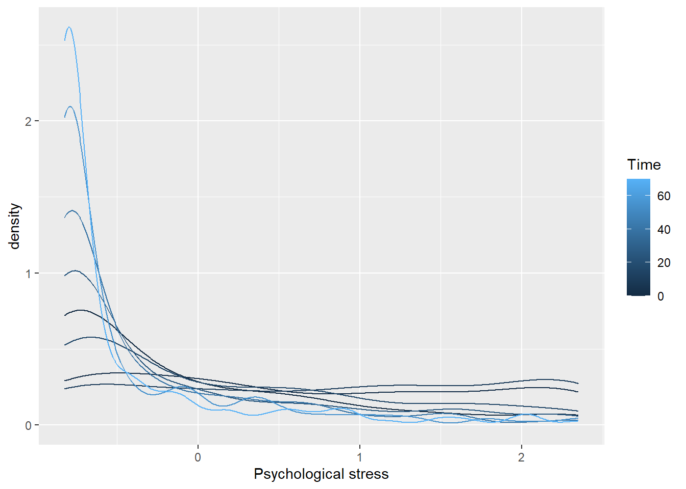
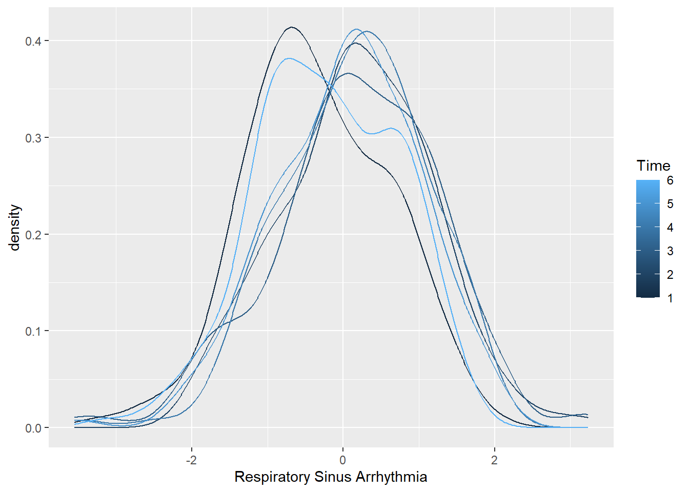
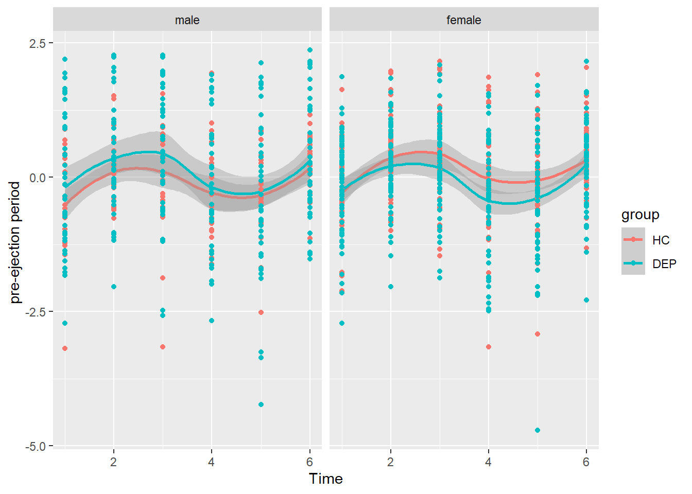

ANS DEP TSST LMM
AGC
26 4 2022
Last updated: 2022-04-27
Checks: 7 0
Knit directory: S://KJP_Biolabor/Projects/FemNAT-CD/DEP_TSST/
This reproducible R Markdown analysis was created with workflowr (version 1.7.0). The Checks tab describes the reproducibility checks that were applied when the results were created. The Past versions tab lists the development history.
Great! Since the R Markdown file has been committed to the Git repository, you know the exact version of the code that produced these results.
Great job! The global environment was empty. Objects defined in the global environment can affect the analysis in your R Markdown file in unknown ways. For reproduciblity it’s best to always run the code in an empty environment.
The command set.seed(20220426) was run prior to running the code in the R Markdown file. Setting a seed ensures that any results that rely on randomness, e.g. subsampling or permutations, are reproducible.
Great job! Recording the operating system, R version, and package versions is critical for reproducibility.
Nice! There were no cached chunks for this analysis, so you can be confident that you successfully produced the results during this run.
Great job! Using relative paths to the files within your workflowr project makes it easier to run your code on other machines.
Great! You are using Git for version control. Tracking code development and connecting the code version to the results is critical for reproducibility.
The results in this page were generated with repository version 4dad410. See the Past versions tab to see a history of the changes made to the R Markdown and HTML files.
Note that you need to be careful to ensure that all relevant files for the analysis have been committed to Git prior to generating the results (you can use wflow_publish or wflow_git_commit). workflowr only checks the R Markdown file, but you know if there are other scripts or data files that it depends on. Below is the status of the Git repository when the results were generated:
Ignored files:
Ignored: .Rproj.user/
Untracked files:
Untracked: Info für Andreas.docx
Untracked: data/DEPHC_GU_DeskriptTSST_VUAMS_N=170 (175-5Dep).sav
Untracked: data/DEPHC_GU_DeskriptTSSThormones_175_final.sav
Untracked: workflow_helper.R
Untracked: ~$fo für Andreas.docx
Unstaged changes:
Modified: _workflowr.yml
Note that any generated files, e.g. HTML, png, CSS, etc., are not included in this status report because it is ok for generated content to have uncommitted changes.
There are no past versions. Publish this analysis with wflow_publish() to start tracking its development.
Prepare
Definitions
DV:
- psychologischer Stress („stressed")
- Average_HR_bpm
- RSA_*_trans
- PEP_*_trans # inclusion PEP_6_trans >1 all other >2 #
IV of no interest :
- Age scaled (“age_meancentered”)
- pubertal status (“pubcatimp”)
- “BMI_meancentered” #not in model * “stressed”
- “smoking_yes_no” #not in model * “stressed”
- “sports_meancentered” #not in model * “stressed”
- Respiration_*_trans #only in model RSA
IV of interest :
- Gruppe (“group”) = 2-Faktor HC vs DEP [Dep ist mit 3, HCs mit 2 kodiert]
- sex (“gender”)
- Zeitpunkt (“Time”) with 2xpolynomes
- Gruppe x Zeitpunkt(Time each poly)
- Gruppe x sex
- Gruppe x sex x Zeitpunkt(Time each poly)
random effects
- individual id
sensitivity check 1
- quantitative DEP “DIKJ_RW” [instead of group]
- gender
sensitivity check 2
- ADHD lifetime diagnosis “ADHD_life”
- Essstörung “Eat_life”
- kombinierte ANX/PTSD “ANXPTSD_life”
not included parameters
- Medication (was included here)
- IQ
- Parental education
- Depression lifetime diagnosis
- PTSD lifetime diagnosis
- SUD lifetime diagnosis
- Anxiety lifetime diagnosis
- explstart_meancentered_min
read and check data
df_ANS = as.data.frame(read_sav(paste0(home,"/data/DEPHC_GU_DeskriptTSST_VUAMS_N=170 (175-5Dep).sav")))
df_ANS$gender = drop(factor(df_ANS$gender, levels = c(1,2),
labels=c("female", "male")))%>% relevel(., ref="male")
df_ANS$group = drop(factor(df_ANS$group, levels = c(2,3), labels=c("HC","DEP"))) %>% relevel(., ref="HC")
df_ANS$group_oANXPTSD_life = drop(factor(df_ANS$group_oANXPTSD_life, levels = c(2,3), labels=c("HC","DEP"))) %>% relevel(., ref="HC")
df_ANS$group_mANXPTSD_life = drop(factor(df_ANS$group_mANXPTSD_life, levels = c(2,3), labels=c("HC","DEP"))) %>% relevel(., ref="HC")
df_ANS$twuid = as.factor(df_ANS$twuid)
df_ANS$ADHD_life = drop(factor(df_ANS$ADHD_life, levels = c(0,1),
labels=c("no_ADHD", "ADHD")))%>% relevel(., ref="no_ADHD")
df_ANS$Eat_life = drop(factor(df_ANS$Eat_life, levels = c(0,1),
labels=c("no_EatDis", "EatDis")))%>% relevel(., ref="no_EatDis")
df_ANS$ANXPTSD_life = drop(factor(df_ANS$ANXPTSD_life, levels = c(0,1),
labels=c("no_ANXPTSD", "ANXPTSD")))%>% relevel(., ref="no_ANXPTSD")
df_ANS$smoking_yes_no = drop(factor(df_ANS$smoking_yes_no, levels = c(0,1),
labels=c("no_smk", "smk")))%>% relevel(., ref="no_smk")
UV = c("age_meancentered", "BMI_meancentered", "pubcatimp",
"smoking_yes_no", "gender", "group", "sports_meancentered")
Respiration_Rate = c(Respiration_Rate_bpm.2=1,
Respiration_Rate_bpm.3=2,
Respiration_Rate_bpm.4=3,
Respiration_Rate_bpm.5=4,
Respiration_Rate_bpm.6=5,
Respiration_Rate_bpm.7=6)
Sensvar = c("DIKJ_RW", #replaces group
"group_mANXPTSD_life", #replaces group
"group_oANXPTSD_life", #replaces group
"ADHD_life",
"Eat_life",
"ANXPTSD_life")
AV = list(
AV_stressed = c(stressed_1=0, stressed_2=2,
stressed_3=10, stressed_4=16,
stressed_5=25, stressed_6=40,
stressed_7=55, stressed_8=70),
AV_HR = c(Average_HR_bpm.2=1,
Average_HR_bpm.3=2,
Average_HR_bpm.4=3,
Average_HR_bpm.5=4,
Average_HR_bpm.6=5,
Average_HR_bpm.7=6),
AV_RSA = c(RSA0_msec.2=1,
RSA0_msec.3=2,
RSA0_msec.4=3,
RSA0_msec.5=4,
RSA0_msec.6=5,
RSA0_msec.7=6),
AV_PEP = c(PEP_msec.2=1,
PEP_msec.3=2,
PEP_msec.4=3,
PEP_msec.5=4,
PEP_msec.6=5,
PEP_msec.7=6))
vartoplot = c(UV, Sensvar, names(Respiration_Rate))
tmpframe = df_ANS[,vartoplot[!vartoplot %in% c("centre")]] %>% gather(key = "value", value = "RespirationRate", all_of(names(Respiration_Rate)))
tmpframe=tmpframe %>%
mutate_if(is.factor, function(x) as.numeric(x)-1) %>% select(-value)
corrplot::corrplot(cor(tmpframe, use = "pairwise"))
complete cohort descriptives
vars=c(UV, names(Respiration_Rate), unlist(lapply(AV, names)), Sensvar)
res = compareGroups(group~., data = df_ANS[,vars])
#summary(res)
export_table <- createTable(res)
export2md(export_table)| HC | DEP | p.overall | |
|---|---|---|---|
| N=70 | N=100 | ||
| age_meancentered | -0.21 (1.66) | 0.14 (1.47) | 0.158 |
| BMI_meancentered | -1.61 (3.38) | 1.13 (5.38) | <0.001 |
| pubcatimp | 3.86 (0.62) | 4.07 (0.59) | 0.026 |
| smoking_yes_no: | <0.001 | ||
| no_smk | 65 (92.9%) | 68 (68.0%) | |
| smk | 5 (7.14%) | 32 (32.0%) | |
| gender: | 0.978 | ||
| male | 27 (38.6%) | 40 (40.0%) | |
| female | 43 (61.4%) | 60 (60.0%) | |
| sports_meancentered | 0.64 (3.49) | -0.45 (5.43) | 0.112 |
| Respiration_Rate_bpm.2 | 17.1 (1.81) | 17.3 (1.97) | 0.432 |
| Respiration_Rate_bpm.3 | 17.2 (1.76) | 17.7 (2.21) | 0.081 |
| Respiration_Rate_bpm.4 | 17.1 (1.97) | 17.5 (2.07) | 0.124 |
| Respiration_Rate_bpm.5 | 15.1 (1.22) | 15.3 (1.53) | 0.510 |
| Respiration_Rate_bpm.6 | 16.1 (1.47) | 16.0 (1.63) | 0.704 |
| Respiration_Rate_bpm.7 | 17.0 (1.75) | 17.6 (1.98) | 0.061 |
| stressed_1 | 0.88 (1.49) | 3.11 (3.05) | <0.001 |
| stressed_2 | 2.27 (2.53) | 6.05 (3.25) | <0.001 |
| stressed_3 | 3.36 (2.92) | 6.47 (3.36) | <0.001 |
| stressed_4 | 1.10 (1.62) | 4.33 (3.18) | <0.001 |
| stressed_5 | 0.46 (0.92) | 3.04 (3.08) | <0.001 |
| stressed_6 | 0.38 (0.79) | 2.24 (2.56) | <0.001 |
| stressed_7 | 0.28 (0.56) | 1.93 (2.51) | <0.001 |
| stressed_8 | 0.30 (0.84) | 1.72 (2.47) | <0.001 |
| Average_HR_bpm.2 | 92.7 (12.6) | 93.8 (11.8) | 0.563 |
| Average_HR_bpm.3 | 89.9 (13.8) | 90.8 (12.5) | 0.674 |
| Average_HR_bpm.4 | 94.4 (18.0) | 91.9 (13.0) | 0.320 |
| Average_HR_bpm.5 | 102 (17.4) | 97.6 (13.2) | 0.092 |
| Average_HR_bpm.6 | 95.7 (14.6) | 94.9 (13.3) | 0.699 |
| Average_HR_bpm.7 | 91.4 (14.0) | 91.7 (11.7) | 0.882 |
| RSA0_msec.2 | 47.5 (22.1) | 38.6 (19.8) | 0.008 |
| RSA0_msec.3 | 67.4 (34.1) | 48.8 (27.7) | <0.001 |
| RSA0_msec.4 | 64.5 (37.2) | 52.5 (30.3) | 0.028 |
| RSA0_msec.5 | 56.8 (23.6) | 52.5 (26.2) | 0.272 |
| RSA0_msec.6 | 56.4 (22.3) | 48.1 (25.8) | 0.028 |
| RSA0_msec.7 | 50.9 (21.1) | 40.4 (19.8) | 0.001 |
| PEP_msec.2 | 114 (10.4) | 111 (16.1) | 0.101 |
| PEP_msec.3 | 107 (12.2) | 107 (16.2) | 0.969 |
| PEP_msec.4 | 103 (15.1) | 103 (17.4) | 0.920 |
| PEP_msec.5 | 105 (14.4) | 107 (16.3) | 0.286 |
| PEP_msec.6 | 110 (11.6) | 110 (16.7) | 0.884 |
| PEP_msec.7 | 113 (10.4) | 111 (16.9) | 0.583 |
| DIKJ_RW | 7.78 (5.61) | 25.3 (9.18) | <0.001 |
| group_mANXPTSD_life: | <0.001 | ||
| HC | 67 (100%) | 0 (0.00%) | |
| DEP | 0 (0.00%) | 54 (100%) | |
| group_oANXPTSD_life: | <0.001 | ||
| HC | 67 (100%) | 0 (0.00%) | |
| DEP | 0 (0.00%) | 46 (100%) | |
| ADHD_life: | 0.022 | ||
| no_ADHD | 70 (100%) | 92 (92.0%) | |
| ADHD | 0 (0.00%) | 8 (8.00%) | |
| Eat_life: | 0.004 | ||
| no_EatDis | 70 (100%) | 87 (87.0%) | |
| EatDis | 0 (0.00%) | 13 (13.0%) | |
| ANXPTSD_life: | <0.001 | ||
| no_ANXPTSD | 67 (95.7%) | 46 (46.0%) | |
| ANXPTSD | 3 (4.29%) | 54 (54.0%) |
male only cohort descriptives
res = compareGroups(group~., data = df_ANS[,c(UV, unlist(lapply(AV, names)), Sensvar)],
subset = gender=="male")
export_table <- createTable(res)
export2md(export_table)| HC | DEP | p.overall | |
|---|---|---|---|
| N=27 | N=40 | ||
| age_meancentered | -0.21 (1.49) | 0.34 (1.38) | 0.133 |
| BMI_meancentered | -0.94 (3.06) | 1.70 (5.62) | 0.016 |
| pubcatimp | 3.44 (0.51) | 3.72 (0.55) | 0.036 |
| smoking_yes_no: | 0.335 | ||
| no_smk | 24 (88.9%) | 31 (77.5%) | |
| smk | 3 (11.1%) | 9 (22.5%) | |
| gender: male | 27 (100%) | 40 (100%) | . |
| sports_meancentered | 2.53 (3.98) | -0.02 (6.19) | 0.044 |
| stressed_1 | 0.80 (1.31) | 2.98 (2.83) | <0.001 |
| stressed_2 | 1.60 (1.97) | 5.10 (3.05) | <0.001 |
| stressed_3 | 3.16 (2.96) | 5.25 (3.59) | 0.012 |
| stressed_4 | 0.89 (1.34) | 3.53 (3.13) | <0.001 |
| stressed_5 | 0.61 (1.19) | 2.51 (3.05) | 0.001 |
| stressed_6 | 0.42 (0.98) | 1.85 (2.30) | 0.001 |
| stressed_7 | 0.33 (0.60) | 1.86 (2.46) | 0.001 |
| stressed_8 | 0.21 (0.38) | 1.48 (2.24) | 0.001 |
| Average_HR_bpm.2 | 88.6 (12.5) | 91.8 (11.2) | 0.289 |
| Average_HR_bpm.3 | 85.0 (13.0) | 88.3 (12.1) | 0.306 |
| Average_HR_bpm.4 | 86.9 (14.7) | 89.2 (12.8) | 0.513 |
| Average_HR_bpm.5 | 95.2 (16.9) | 94.4 (12.0) | 0.833 |
| Average_HR_bpm.6 | 91.6 (14.6) | 92.2 (12.4) | 0.861 |
| Average_HR_bpm.7 | 86.8 (12.8) | 89.5 (10.9) | 0.365 |
| RSA0_msec.2 | 46.4 (19.0) | 38.1 (22.4) | 0.112 |
| RSA0_msec.3 | 77.5 (43.5) | 53.9 (35.0) | 0.025 |
| RSA0_msec.4 | 81.9 (46.8) | 60.9 (39.2) | 0.064 |
| RSA0_msec.5 | 61.1 (26.4) | 54.6 (27.7) | 0.345 |
| RSA0_msec.6 | 59.2 (26.7) | 48.4 (28.0) | 0.123 |
| RSA0_msec.7 | 51.9 (21.7) | 40.6 (21.2) | 0.042 |
| PEP_msec.2 | 116 (9.18) | 109 (20.6) | 0.076 |
| PEP_msec.3 | 110 (10.3) | 105 (21.0) | 0.257 |
| PEP_msec.4 | 107 (12.0) | 99.9 (21.4) | 0.109 |
| PEP_msec.5 | 108 (14.6) | 106 (19.8) | 0.616 |
| PEP_msec.6 | 113 (9.34) | 108 (21.3) | 0.220 |
| PEP_msec.7 | 114 (8.13) | 110 (21.8) | 0.233 |
| DIKJ_RW | 7.22 (4.36) | 22.8 (8.59) | <0.001 |
| group_mANXPTSD_life: | <0.001 | ||
| HC | 26 (100%) | 0 (0.00%) | |
| DEP | 0 (0.00%) | 23 (100%) | |
| group_oANXPTSD_life: | <0.001 | ||
| HC | 26 (100%) | 0 (0.00%) | |
| DEP | 0 (0.00%) | 17 (100%) | |
| ADHD_life: | 0.142 | ||
| no_ADHD | 27 (100%) | 36 (90.0%) | |
| ADHD | 0 (0.00%) | 4 (10.0%) | |
| Eat_life: | 1.000 | ||
| no_EatDis | 27 (100%) | 39 (97.5%) | |
| EatDis | 0 (0.00%) | 1 (2.50%) | |
| ANXPTSD_life: | <0.001 | ||
| no_ANXPTSD | 26 (96.3%) | 17 (42.5%) | |
| ANXPTSD | 1 (3.70%) | 23 (57.5%) |
female only cohort descriptives
res = compareGroups(group~.,
data = df_ANS[,c(UV, unlist(lapply(AV, names)), Sensvar)],
subset = gender=="female")
export_table <- createTable(res)
export2md(export_table)| HC | DEP | p.overall | |
|---|---|---|---|
| N=43 | N=60 | ||
| age_meancentered | -0.21 (1.77) | 0.01 (1.52) | 0.518 |
| BMI_meancentered | -2.04 (3.53) | 0.75 (5.23) | 0.002 |
| pubcatimp | 4.12 (0.54) | 4.30 (0.50) | 0.083 |
| smoking_yes_no: | <0.001 | ||
| no_smk | 41 (95.3%) | 37 (61.7%) | |
| smk | 2 (4.65%) | 23 (38.3%) | |
| gender: female | 43 (100%) | 60 (100%) | . |
| sports_meancentered | -0.54 (2.55) | -0.74 (4.89) | 0.789 |
| stressed_1 | 0.93 (1.60) | 3.20 (3.20) | <0.001 |
| stressed_2 | 2.68 (2.76) | 6.68 (3.25) | <0.001 |
| stressed_3 | 3.48 (2.92) | 7.28 (2.96) | <0.001 |
| stressed_4 | 1.23 (1.78) | 4.86 (3.13) | <0.001 |
| stressed_5 | 0.37 (0.69) | 3.39 (3.08) | <0.001 |
| stressed_6 | 0.35 (0.64) | 2.50 (2.71) | <0.001 |
| stressed_7 | 0.24 (0.54) | 1.97 (2.56) | <0.001 |
| stressed_8 | 0.36 (1.04) | 1.87 (2.62) | <0.001 |
| Average_HR_bpm.2 | 95.2 (12.2) | 95.1 (12.1) | 0.959 |
| Average_HR_bpm.3 | 93.0 (13.5) | 92.4 (12.5) | 0.839 |
| Average_HR_bpm.4 | 99.1 (18.5) | 93.7 (12.9) | 0.102 |
| Average_HR_bpm.5 | 106 (16.5) | 99.8 (13.5) | 0.047 |
| Average_HR_bpm.6 | 98.3 (14.2) | 96.7 (13.6) | 0.553 |
| Average_HR_bpm.7 | 94.3 (14.1) | 93.1 (12.0) | 0.667 |
| RSA0_msec.2 | 48.2 (24.0) | 38.9 (18.0) | 0.034 |
| RSA0_msec.3 | 61.3 (25.7) | 45.4 (21.1) | 0.001 |
| RSA0_msec.4 | 54.0 (25.2) | 47.0 (21.0) | 0.136 |
| RSA0_msec.5 | 54.2 (21.6) | 51.1 (25.4) | 0.512 |
| RSA0_msec.6 | 54.7 (19.4) | 47.9 (24.4) | 0.118 |
| RSA0_msec.7 | 50.3 (20.9) | 40.3 (19.1) | 0.015 |
| PEP_msec.2 | 113 (11.1) | 112 (12.3) | 0.604 |
| PEP_msec.3 | 106 (13.2) | 109 (12.0) | 0.242 |
| PEP_msec.4 | 101 (16.5) | 106 (13.9) | 0.130 |
| PEP_msec.5 | 103 (14.2) | 108 (13.6) | 0.049 |
| PEP_msec.6 | 108 (12.5) | 112 (12.8) | 0.161 |
| PEP_msec.7 | 111 (11.5) | 112 (12.7) | 0.661 |
| DIKJ_RW | 8.14 (6.30) | 26.9 (9.28) | <0.001 |
| group_mANXPTSD_life: | <0.001 | ||
| HC | 41 (100%) | 0 (0.00%) | |
| DEP | 0 (0.00%) | 31 (100%) | |
| group_oANXPTSD_life: | <0.001 | ||
| HC | 41 (100%) | 0 (0.00%) | |
| DEP | 0 (0.00%) | 29 (100%) | |
| ADHD_life: | 0.138 | ||
| no_ADHD | 43 (100%) | 56 (93.3%) | |
| ADHD | 0 (0.00%) | 4 (6.67%) | |
| Eat_life: | 0.005 | ||
| no_EatDis | 43 (100%) | 48 (80.0%) | |
| EatDis | 0 (0.00%) | 12 (20.0%) | |
| ANXPTSD_life: | <0.001 | ||
| no_ANXPTSD | 41 (95.3%) | 29 (48.3%) | |
| ANXPTSD | 2 (4.65%) | 31 (51.7%) |
linear model with mixed effects and time as polynomial
We adapted a boxed design by individual over Time with a 2 polynomial decomposion of time no site effect included as all samples where from Frankfurt
varint = "gender+group+poly(Time, 2)+gender*group+poly(Time, 2)*group+gender*poly(Time, 2)*group+(1|twuid)"
varintq = "gender+DIKJ_RW+poly(Time, 2)+gender*DIKJ_RW+poly(Time, 2)*DIKJ_RW+gender*poly(Time, 2)*DIKJ_RW+(1|twuid)"
varint_oAnxPTSD = "gender+group_oANXPTSD_life+poly(Time, 2)+gender*group_oANXPTSD_life+poly(Time, 2)*group_oANXPTSD_life+gender*poly(Time, 2)*group_oANXPTSD_life+(1|twuid)"
varint_mAnxPTSD = "gender+group_mANXPTSD_life+poly(Time, 2)+gender*group_mANXPTSD_life+poly(Time, 2)*group_mANXPTSD_life+gender*poly(Time, 2)*group_mANXPTSD_life+(1|twuid)"
varint_nogen="group+poly(Time, 2)+poly(Time, 2)*group+(1|twuid)"
varint_nogenq="DIKJ_RW+poly(Time, 2)+poly(Time, 2)*DIKJ_RW+(1|twuid)"
varint_nogen_oAnxPTSD ="oANXPTSD+poly(Time, 2)+poly(Time, 2)*oANXPTSD+(1|twuid)"
varint_nogen_mAnxPTSD ="mANXPTSD+poly(Time, 2)+poly(Time, 2)*mANXPTSD+(1|twuid)"
models=list(
AV_stressed = paste0("DV~1+age_meancentered+pubcatimp+",varint),
AV_HR=paste0("DV~1+age_meancentered+pubcatimp+BMI_meancentered+smoking_yes_no+sports_meancentered+",varint),
AV_RSA=paste0("DV~1+age_meancentered+pubcatimp+BMI_meancentered+smoking_yes_no+sports_meancentered+RespirationRate+",varint),
AV_PEP=paste0("DV~1+age_meancentered+pubcatimp+BMI_meancentered+smoking_yes_no+sports_meancentered+",varint))
models.nogen=list(
AV_stressed = paste0("DV~1+age_meancentered+pubcatimp+",varint_nogen),
AV_HR=paste0("DV~1+age_meancentered+pubcatimp+BMI_meancentered+smoking_yes_no+sports_meancentered+",varint_nogen),
AV_RSA=paste0("DV~1+age_meancentered+pubcatimp+BMI_meancentered+smoking_yes_no+sports_meancentered+RespirationRate+",varint_nogen),
AV_PEP=paste0("DV~1+age_meancentered+pubcatimp+BMI_meancentered+smoking_yes_no+sports_meancentered+",varint_nogen))
models.quant=list(
AV_stressed = paste0("DV~1+age_meancentered+pubcatimp+",varintq),
AV_HR=paste0("DV~1+age_meancentered+pubcatimp+BMI_meancentered+smoking_yes_no+sports_meancentered+",varintq),
AV_RSA=paste0("DV~1+age_meancentered+pubcatimp+BMI_meancentered+smoking_yes_no+sports_meancentered+RespirationRate+",varintq),
AV_PEP=paste0("DV~1+age_meancentered+pubcatimp+BMI_meancentered+smoking_yes_no+sports_meancentered+",varintq))
models.oAnxPTSD=list(
AV_stressed = paste0("DV~1+age_meancentered+pubcatimp+",varint_oAnxPTSD),
AV_HR=paste0("DV~1+age_meancentered+pubcatimp+BMI_meancentered+smoking_yes_no+sports_meancentered+",varint_oAnxPTSD),
AV_RSA=paste0("DV~1+age_meancentered+pubcatimp+BMI_meancentered+smoking_yes_no+sports_meancentered+RespirationRate+",varint_oAnxPTSD),
AV_PEP=paste0("DV~1+age_meancentered+pubcatimp+BMI_meancentered+smoking_yes_no+sports_meancentered+",varint_oAnxPTSD))
models.mAnxPTSD=list(
AV_stressed = paste0("DV~1+age_meancentered+pubcatimp+",varint_mAnxPTSD),
AV_HR=paste0("DV~1+age_meancentered+pubcatimp+BMI_meancentered+smoking_yes_no+sports_meancentered+",varint_mAnxPTSD),
AV_RSA=paste0("DV~1+age_meancentered+pubcatimp+BMI_meancentered+smoking_yes_no+sports_meancentered+RespirationRate+",varint_mAnxPTSD),
AV_PEP=paste0("DV~1+age_meancentered+pubcatimp+BMI_meancentered+smoking_yes_no+sports_meancentered+",varint_mAnxPTSD))lm.beta.lmer <- function(mod) {
b <- fixef(mod)[-1]
sd.x <- apply(getME(mod,"X")[,-1],2,sd)
sd.y <- sd(getME(mod,"y"))
b*sd.x/sd.y
}
resall = list()
for (depvar in names(AV)){
cols = names(AV[[depvar]])
long = df_ANS[,c("twuid",cols, UV, Sensvar)] %>%
gather(key = "value", value = "DV", all_of(cols))
if(depvar =="AV_RSA"){ long$RespirationRate = tmpframe$RespirationRate}
long$twuid = as.factor(long$twuid)
long2 = long%>% mutate_if(is.numeric, scale)
long2$Time = AV[[depvar]][long2$value]
long2$value =as.factor(long2$value) %>%
relevel(., ref=grep("\\.2|stressed_1", unique(long2$value),value = T))
model.lme = lme4::lmer(models[[depvar]], data=long2)
model.lme0 = lme4::lmer(DV~1+(1|twuid), data=long2)
anovah0 = anova(model.lme0, model.lme)
model_p_val = anovah0$`Pr(>Chisq)`[2]
Res = summary(model.lme)
resall[[depvar]] = model.lme
resall[[paste0(depvar,"_longdat")]] = long2
res.coeff = as.data.frame(Res$coefficients)
res.coeff$stbeta = c(NA,lm.beta.lmer(model.lme))
res.coeff$pvalue = pt(abs(res.coeff$"t value"), 1000000, lower.tail = F) * 2
resall[[paste0(depvar,"_coeff")]]=res.coeff
resall[[paste0(depvar,"_modsig")]]=model_p_val
## DEP quant
model.lme = lme4::lmer(models.quant[[depvar]], data=long2)
Res = summary(model.lme)
resall[[depvar]] = model.lme
resall[[paste0(depvar,"_longdat")]] = long2
res.coeff = as.data.frame(Res$coefficients)
res.coeff$stbeta = c(NA,lm.beta.lmer(model.lme))
res.coeff$pvalue = pt(abs(res.coeff$"t value"), 1000000, lower.tail = F) * 2
resall[[paste0(depvar,"_coeff_DEPquant")]]=res.coeff
## oAnxPTSD
model.lme = lme4::lmer(models.oAnxPTSD[[depvar]], data=long2)
Res = summary(model.lme)
resall[[depvar]] = model.lme
resall[[paste0(depvar,"_longdat")]] = long2
res.coeff = as.data.frame(Res$coefficients)
res.coeff$stbeta = c(NA,lm.beta.lmer(model.lme))
res.coeff$pvalue = pt(abs(res.coeff$"t value"), 1000000, lower.tail = F) * 2
resall[[paste0(depvar,"_coeff_oAnxPTSD")]]=res.coeff
## mAnxPTSD
model.lme = lme4::lmer(models.mAnxPTSD[[depvar]], data=long2)
Res = summary(model.lme)
resall[[depvar]] = model.lme
resall[[paste0(depvar,"_longdat")]] = long2
res.coeff = as.data.frame(Res$coefficients)
res.coeff$stbeta = c(NA,lm.beta.lmer(model.lme))
res.coeff$pvalue = pt(abs(res.coeff$"t value"), 1000000, lower.tail = F) * 2
resall[[paste0(depvar,"_coeff_oAnxPTSD")]]=res.coeff
## nogenmod
### males
model.lme = lme4::lmer(models.nogen[[depvar]], data=long2, subset = long2$gender=="male")
Res = summary(model.lme)
resall[[depvar]] = model.lme
resall[[paste0(depvar,"_longdat")]] = long2
res.coeff = as.data.frame(Res$coefficients)
res.coeff$stbeta = c(NA,lm.beta.lmer(model.lme))
res.coeff$pvalue = pt(abs(res.coeff$"t value"), 1000000, lower.tail = F) * 2
resall[[paste0(depvar,"_coeff_males")]]=res.coeff
### females
model.lme = lme4::lmer(models.nogen[[depvar]], data=long2, subset = long2$gender=="female")
Res = summary(model.lme)
resall[[depvar]] = model.lme
resall[[paste0(depvar,"_longdat")]] = long2
res.coeff = as.data.frame(Res$coefficients)
res.coeff$stbeta = c(NA,lm.beta.lmer(model.lme))
res.coeff$pvalue = pt(abs(res.coeff$"t value"), 1000000, lower.tail = F) * 2
resall[[paste0(depvar,"_coeff_females")]]=res.coeff
for (sv in Sensvar){
model.lme = lme4::lmer(str_replace(models[[depvar]], "~1+",paste0("~1+",sv,"+")), data=long2)
Res = summary(model.lme)
res.coeff = as.data.frame(Res$coefficients)
res.coeff$stbeta = c(NA,lm.beta.lmer(model.lme))
res.coeff$pvalue = pt(abs(res.coeff$"t value"), 1000000, lower.tail = F) * 2
resall[[paste0(depvar,"_coeff", "_",sv)]]=res.coeff
}
}refitting model(s) with ML (instead of REML)fixed-effect model matrix is rank deficient so dropping 1 column / coefficient
fixed-effect model matrix is rank deficient so dropping 1 column / coefficientrefitting model(s) with ML (instead of REML)fixed-effect model matrix is rank deficient so dropping 1 column / coefficient
fixed-effect model matrix is rank deficient so dropping 1 column / coefficientrefitting model(s) with ML (instead of REML)fixed-effect model matrix is rank deficient so dropping 1 column / coefficient
fixed-effect model matrix is rank deficient so dropping 1 column / coefficientrefitting model(s) with ML (instead of REML)fixed-effect model matrix is rank deficient so dropping 1 column / coefficient
fixed-effect model matrix is rank deficient so dropping 1 column / coefficienttableplot = function (x){
x %>% dplyr::mutate_if(is.numeric, function(x){as.character(signif(x, 3))}) %>% kbl() %>% kable_classic()
}Results
stressed
full models: DV~1+age_meancentered+pubcatimp+gender+group+poly(Time, 2)+gendergroup+poly(Time, 2)group+genderpoly(Time, 2)group+(1|twuid)
h0 model: DV~1+(1|twuid):
overall model p-value:9.17e-82
depvar = "AV_stressed"
labeltag = "Psychological stress"
ggplot(data = resall[[paste0(depvar, "_longdat")]],
aes(DV, group=Time, col=Time)) +
ylab("density") + xlab(labeltag)+
geom_density()
ggplot(data = resall[[paste0(depvar, "_longdat")]],
aes(Time,DV, col=group)) +
ylab(labeltag) + xlab("Time")+
geom_smooth(method = 'loess') + geom_point() + facet_wrap(~gender)`geom_smooth()` using formula 'y ~ x'resall[[paste0(depvar, "_coeff")]] %>% tableplot()| Estimate | Std. Error | t value | stbeta | pvalue | |
|---|---|---|---|---|---|
| (Intercept) | -0.423 | 0.128 | -3.3 | NA | 0.000973 |
| age_meancentered | 0.0613 | 0.0579 | 1.06 | 0.0613 | 0.29 |
| pubcatimp | 0.0858 | 0.0674 | 1.27 | 0.0855 | 0.203 |
| genderfemale | -0.0312 | 0.165 | -0.189 | -0.0153 | 0.85 |
| groupDEP | 0.591 | 0.152 | 3.89 | 0.291 | 9.95e-05 |
| poly(Time, 2)1 | -6.39 | 1.6 | -4 | -0.173 | 6.28e-05 |
| poly(Time, 2)2 | 0.421 | 1.6 | 0.264 | 0.0114 | 0.792 |
| genderfemale:groupDEP | 0.261 | 0.192 | 1.36 | 0.125 | 0.175 |
| groupDEP:poly(Time, 2)1 | -6.49 | 2.08 | -3.12 | -0.134 | 0.00179 |
| groupDEP:poly(Time, 2)2 | 1.37 | 2.07 | 0.661 | 0.0284 | 0.509 |
| genderfemale:poly(Time, 2)1 | -2.34 | 2.04 | -1.15 | -0.0493 | 0.252 |
| genderfemale:poly(Time, 2)2 | 2.05 | 2.04 | 1.01 | 0.0434 | 0.314 |
| genderfemale:groupDEP:poly(Time, 2)1 | -1.49 | 2.66 | -0.558 | -0.0239 | 0.577 |
| genderfemale:groupDEP:poly(Time, 2)2 | -3.21 | 2.66 | -1.21 | -0.0518 | 0.227 |
resall[[paste0(depvar, "_coeff_DEPquant")]] %>% tableplot()| Estimate | Std. Error | t value | stbeta | pvalue | |
|---|---|---|---|---|---|
| (Intercept) | -0.0248 | 0.0808 | -0.307 | NA | 0.759 |
| age_meancentered | 0.074 | 0.0549 | 1.35 | 0.0738 | 0.178 |
| pubcatimp | 0.053 | 0.0643 | 0.824 | 0.0526 | 0.41 |
| genderfemale | 0.0484 | 0.112 | 0.434 | 0.0236 | 0.665 |
| DIKJ_RW | 0.421 | 0.0803 | 5.24 | 0.42 | 1.6e-07 |
| poly(Time, 2)1 | -11.2 | 1.05 | -10.6 | -0.301 | 2.44e-26 |
| poly(Time, 2)2 | 1.28 | 1.05 | 1.22 | 0.0346 | 0.221 |
| genderfemale:DIKJ_RW | 0.017 | 0.0955 | 0.178 | 0.014 | 0.858 |
| DIKJ_RW:poly(Time, 2)1 | -4.48 | 1.18 | -3.8 | -0.121 | 0.000142 |
| DIKJ_RW:poly(Time, 2)2 | 0.293 | 1.17 | 0.251 | 0.00791 | 0.802 |
| genderfemale:poly(Time, 2)1 | -2.02 | 1.34 | -1.51 | -0.0426 | 0.131 |
| genderfemale:poly(Time, 2)2 | 0.184 | 1.33 | 0.138 | 0.00387 | 0.891 |
| genderfemale:DIKJ_RW:poly(Time, 2)1 | 0.842 | 1.41 | 0.595 | 0.0188 | 0.552 |
| genderfemale:DIKJ_RW:poly(Time, 2)2 | -0.931 | 1.4 | -0.663 | -0.0208 | 0.507 |
resall[[paste0(depvar, "_coeff_group_mANXPTSD_life")]] %>% tableplot()| Estimate | Std. Error | t value | stbeta | pvalue | |
|---|---|---|---|---|---|
| (Intercept) | -0.326 | 0.126 | -2.59 | NA | 0.00966 |
| group_mANXPTSD_lifeDEP | 0.568 | 0.166 | 3.41 | 0.286 | 0.000638 |
| age_meancentered | -0.0262 | 0.0628 | -0.417 | -0.0269 | 0.677 |
| pubcatimp | 0.202 | 0.0746 | 2.71 | 0.196 | 0.00682 |
| genderfemale | -0.19 | 0.164 | -1.16 | -0.0947 | 0.245 |
| poly(Time, 2)1 | -6.56 | 1.56 | -4.21 | -0.18 | 2.51e-05 |
| poly(Time, 2)2 | 0.377 | 1.56 | 0.242 | 0.0103 | 0.809 |
| genderfemale:groupDEP | 0.45 | 0.212 | 2.12 | 0.199 | 0.0336 |
| groupDEP:poly(Time, 2)1 | -7.5 | 2.29 | -3.27 | -0.137 | 0.00107 |
| groupDEP:poly(Time, 2)2 | 1.44 | 2.28 | 0.632 | 0.0264 | 0.528 |
| genderfemale:poly(Time, 2)1 | -1.17 | 2 | -0.586 | -0.0247 | 0.558 |
| genderfemale:poly(Time, 2)2 | 1.53 | 1.99 | 0.768 | 0.0324 | 0.443 |
| genderfemale:groupDEP:poly(Time, 2)1 | -2.8 | 2.98 | -0.94 | -0.0388 | 0.347 |
| genderfemale:groupDEP:poly(Time, 2)2 | -2.88 | 2.97 | -0.97 | -0.0399 | 0.332 |
resall[[paste0(depvar, "_coeff_group_oANXPTSD_life")]] %>% tableplot()| Estimate | Std. Error | t value | stbeta | pvalue | |
|---|---|---|---|---|---|
| (Intercept) | -0.52 | 0.113 | -4.6 | NA | 4.14e-06 |
| group_oANXPTSD_lifeDEP | 0.573 | 0.156 | 3.67 | 0.328 | 0.000243 |
| age_meancentered | 0.0992 | 0.0582 | 1.7 | 0.119 | 0.0883 |
| pubcatimp | -0.0371 | 0.069 | -0.538 | -0.0456 | 0.59 |
| genderfemale | 0.0751 | 0.147 | 0.511 | 0.0424 | 0.61 |
| poly(Time, 2)1 | -6.56 | 1.49 | -4.41 | -0.207 | 1.04e-05 |
| poly(Time, 2)2 | 0.377 | 1.49 | 0.254 | 0.0119 | 0.8 |
| genderfemale:groupDEP | 0.176 | 0.198 | 0.886 | 0.0895 | 0.376 |
| groupDEP:poly(Time, 2)1 | -4.78 | 2.38 | -2.01 | -0.0962 | 0.0449 |
| groupDEP:poly(Time, 2)2 | 1.39 | 2.38 | 0.584 | 0.028 | 0.559 |
| genderfemale:poly(Time, 2)1 | -1.18 | 1.91 | -0.618 | -0.0292 | 0.537 |
| genderfemale:poly(Time, 2)2 | 1.52 | 1.9 | 0.796 | 0.0377 | 0.426 |
| genderfemale:groupDEP:poly(Time, 2)1 | -2.79 | 3.01 | -0.927 | -0.0448 | 0.354 |
| genderfemale:groupDEP:poly(Time, 2)2 | -2.49 | 3.01 | -0.827 | -0.0399 | 0.408 |
resall[[paste0(depvar, "_coeff_males")]] %>% tableplot()| Estimate | Std. Error | t value | stbeta | pvalue | |
|---|---|---|---|---|---|
| (Intercept) | -0.232 | 0.136 | -1.7 | NA | 0.0887 |
| age_meancentered | -0.0843 | 0.0963 | -0.875 | -0.0856 | 0.381 |
| pubcatimp | 0.324 | 0.101 | 3.21 | 0.319 | 0.00131 |
| groupDEP | 0.533 | 0.146 | 3.64 | 0.288 | 0.000268 |
| poly(Time, 2)1 | -6.39 | 1.42 | -4.5 | -0.19 | 6.72e-06 |
| poly(Time, 2)2 | 0.422 | 1.42 | 0.297 | 0.0125 | 0.766 |
| groupDEP:poly(Time, 2)1 | -6.51 | 1.85 | -3.53 | -0.149 | 0.000422 |
| groupDEP:poly(Time, 2)2 | 1.37 | 1.84 | 0.746 | 0.0315 | 0.456 |
resall[[paste0(depvar, "_coeff_females")]] %>% tableplot()| Estimate | Std. Error | t value | stbeta | pvalue | |
|---|---|---|---|---|---|
| (Intercept) | -0.409 | 0.0956 | -4.28 | NA | 1.87e-05 |
| age_meancentered | 0.14 | 0.0706 | 1.98 | 0.139 | 0.0478 |
| pubcatimp | -0.0718 | 0.0875 | -0.821 | -0.0584 | 0.412 |
| groupDEP | 0.889 | 0.123 | 7.25 | 0.418 | 4.2e-13 |
| poly(Time, 2)1 | -8.74 | 1.36 | -6.44 | -0.226 | 1.16e-10 |
| poly(Time, 2)2 | 2.47 | 1.35 | 1.82 | 0.0638 | 0.0684 |
| groupDEP:poly(Time, 2)1 | -7.99 | 1.78 | -4.5 | -0.157 | 6.91e-06 |
| groupDEP:poly(Time, 2)2 | -1.84 | 1.77 | -1.04 | -0.0363 | 0.3 |
resall[[paste0(depvar, "_coeff_ADHD_life")]] %>% tableplot()| Estimate | Std. Error | t value | stbeta | pvalue | |
|---|---|---|---|---|---|
| (Intercept) | -0.422 | 0.129 | -3.28 | NA | 0.00102 |
| ADHD_lifeADHD | 0.151 | 0.223 | 0.679 | 0.0322 | 0.497 |
| age_meancentered | 0.0632 | 0.0581 | 1.09 | 0.0633 | 0.276 |
| pubcatimp | 0.0867 | 0.0675 | 1.28 | 0.0864 | 0.199 |
| genderfemale | -0.0323 | 0.166 | -0.195 | -0.0158 | 0.846 |
| groupDEP | 0.575 | 0.154 | 3.73 | 0.283 | 0.00019 |
| poly(Time, 2)1 | -6.39 | 1.6 | -4 | -0.173 | 6.28e-05 |
| poly(Time, 2)2 | 0.421 | 1.6 | 0.264 | 0.0114 | 0.792 |
| genderfemale:groupDEP | 0.267 | 0.193 | 1.38 | 0.128 | 0.167 |
| groupDEP:poly(Time, 2)1 | -6.49 | 2.08 | -3.12 | -0.134 | 0.00179 |
| groupDEP:poly(Time, 2)2 | 1.37 | 2.07 | 0.661 | 0.0284 | 0.509 |
| genderfemale:poly(Time, 2)1 | -2.34 | 2.04 | -1.15 | -0.0493 | 0.252 |
| genderfemale:poly(Time, 2)2 | 2.05 | 2.04 | 1.01 | 0.0434 | 0.314 |
| genderfemale:groupDEP:poly(Time, 2)1 | -1.49 | 2.66 | -0.558 | -0.0239 | 0.577 |
| genderfemale:groupDEP:poly(Time, 2)2 | -3.21 | 2.66 | -1.21 | -0.0518 | 0.227 |
resall[[paste0(depvar, "_coeff_Eat_life")]] %>% tableplot()| Estimate | Std. Error | t value | stbeta | pvalue | |
|---|---|---|---|---|---|
| (Intercept) | -0.423 | 0.127 | -3.32 | NA | 0.000889 |
| Eat_lifeEatDis | 0.346 | 0.186 | 1.86 | 0.0924 | 0.0622 |
| age_meancentered | 0.047 | 0.058 | 0.81 | 0.047 | 0.418 |
| pubcatimp | 0.0879 | 0.0669 | 1.31 | 0.0876 | 0.189 |
| genderfemale | -0.0336 | 0.164 | -0.204 | -0.0164 | 0.838 |
| groupDEP | 0.587 | 0.151 | 3.89 | 0.289 | 1e-04 |
| poly(Time, 2)1 | -6.39 | 1.6 | -4 | -0.173 | 6.27e-05 |
| poly(Time, 2)2 | 0.422 | 1.6 | 0.264 | 0.0114 | 0.791 |
| genderfemale:groupDEP | 0.198 | 0.194 | 1.02 | 0.0946 | 0.308 |
| groupDEP:poly(Time, 2)1 | -6.49 | 2.08 | -3.12 | -0.134 | 0.00179 |
| groupDEP:poly(Time, 2)2 | 1.37 | 2.07 | 0.661 | 0.0284 | 0.509 |
| genderfemale:poly(Time, 2)1 | -2.34 | 2.04 | -1.15 | -0.0493 | 0.252 |
| genderfemale:poly(Time, 2)2 | 2.05 | 2.04 | 1.01 | 0.0433 | 0.314 |
| genderfemale:groupDEP:poly(Time, 2)1 | -1.49 | 2.66 | -0.56 | -0.024 | 0.575 |
| genderfemale:groupDEP:poly(Time, 2)2 | -3.21 | 2.66 | -1.21 | -0.0518 | 0.227 |
resall[[paste0(depvar, "_coeff_ANXPTSD_life")]] %>% tableplot()| Estimate | Std. Error | t value | stbeta | pvalue | |
|---|---|---|---|---|---|
| (Intercept) | -0.434 | 0.127 | -3.41 | NA | 0.000647 |
| ANXPTSD_lifeANXPTSD | 0.224 | 0.114 | 1.97 | 0.105 | 0.0489 |
| age_meancentered | 0.0596 | 0.0574 | 1.04 | 0.0597 | 0.299 |
| pubcatimp | 0.0829 | 0.0668 | 1.24 | 0.0826 | 0.215 |
| genderfemale | -0.0301 | 0.164 | -0.184 | -0.0147 | 0.854 |
| groupDEP | 0.473 | 0.162 | 2.92 | 0.233 | 0.00353 |
| poly(Time, 2)1 | -6.39 | 1.6 | -4 | -0.173 | 6.28e-05 |
| poly(Time, 2)2 | 0.421 | 1.6 | 0.264 | 0.0114 | 0.792 |
| genderfemale:groupDEP | 0.276 | 0.191 | 1.44 | 0.132 | 0.149 |
| groupDEP:poly(Time, 2)1 | -6.49 | 2.08 | -3.12 | -0.134 | 0.00181 |
| groupDEP:poly(Time, 2)2 | 1.37 | 2.07 | 0.659 | 0.0284 | 0.51 |
| genderfemale:poly(Time, 2)1 | -2.34 | 2.04 | -1.15 | -0.0493 | 0.252 |
| genderfemale:poly(Time, 2)2 | 2.05 | 2.04 | 1.01 | 0.0434 | 0.314 |
| genderfemale:groupDEP:poly(Time, 2)1 | -1.49 | 2.66 | -0.558 | -0.0239 | 0.577 |
| genderfemale:groupDEP:poly(Time, 2)2 | -3.21 | 2.66 | -1.21 | -0.0517 | 0.227 |
Heartrate
full models: DV~1+age_meancentered+pubcatimp+BMI_meancentered+smoking_yes_no+sports_meancentered+gender+group+poly(Time, 2)+gendergroup+poly(Time, 2)group+genderpoly(Time, 2)group+(1|twuid)
h0 model: DV~1+(1|twuid):
overall model p-value:5.2e-15
depvar = "AV_HR"
labeltag = "Heartrate"
ggplot(data = resall[[paste0(depvar, "_longdat")]],
aes(DV, group=Time, col=Time)) +
ylab("density") + xlab(labeltag)+
geom_density()ggplot(data = resall[[paste0(depvar, "_longdat")]],
aes(Time,DV, col=group)) +
ylab(labeltag) + xlab("Time")+
geom_smooth(method = 'loess') + geom_point() + facet_wrap(~gender)`geom_smooth()` using formula 'y ~ x'resall[[paste0(depvar, "_coeff")]] %>% tableplot()| Estimate | Std. Error | t value | stbeta | pvalue | |
|---|---|---|---|---|---|
| (Intercept) | -0.274 | 0.183 | -1.5 | NA | 0.134 |
| age_meancentered | -0.346 | 0.0818 | -4.22 | -0.346 | 2.41e-05 |
| pubcatimp | 0.128 | 0.095 | 1.35 | 0.128 | 0.177 |
| BMI_meancentered | 0.0225 | 0.0691 | 0.326 | 0.0225 | 0.745 |
| smoking_yes_nosmk | -0.00997 | 0.169 | -0.0588 | -0.00411 | 0.953 |
| sports_meancentered | 0.00919 | 0.0673 | 0.137 | 0.00919 | 0.891 |
| genderfemale | 0.486 | 0.236 | 2.06 | 0.238 | 0.0398 |
| groupDEP | 0.192 | 0.218 | 0.882 | 0.0946 | 0.378 |
| poly(Time, 2)1 | 2.14 | 1.16 | 1.85 | 0.0669 | 0.0647 |
| poly(Time, 2)2 | -2.88 | 1.16 | -2.49 | -0.0902 | 0.0127 |
| genderfemale:groupDEP | -0.371 | 0.274 | -1.35 | -0.177 | 0.176 |
| groupDEP:poly(Time, 2)1 | -1.49 | 1.5 | -0.998 | -0.0359 | 0.318 |
| groupDEP:poly(Time, 2)2 | 2.03 | 1.5 | 1.35 | 0.0487 | 0.176 |
| genderfemale:poly(Time, 2)1 | -0.137 | 1.47 | -0.0928 | -0.00334 | 0.926 |
| genderfemale:poly(Time, 2)2 | -3.62 | 1.47 | -2.46 | -0.0884 | 0.014 |
| genderfemale:groupDEP:poly(Time, 2)1 | 0.465 | 1.92 | 0.243 | 0.00866 | 0.808 |
| genderfemale:groupDEP:poly(Time, 2)2 | 2.27 | 1.92 | 1.19 | 0.0423 | 0.236 |
resall[[paste0(depvar, "_coeff_DEPquant")]] %>% tableplot()| Estimate | Std. Error | t value | stbeta | pvalue | |
|---|---|---|---|---|---|
| (Intercept) | -0.159 | 0.127 | -1.25 | NA | 0.212 |
| age_meancentered | -0.35 | 0.0835 | -4.19 | -0.348 | 2.82e-05 |
| pubcatimp | 0.136 | 0.097 | 1.4 | 0.135 | 0.162 |
| BMI_meancentered | 0.0243 | 0.0696 | 0.348 | 0.0242 | 0.728 |
| smoking_yes_nosmk | 0.0283 | 0.183 | 0.155 | 0.0117 | 0.877 |
| sports_meancentered | -0.00669 | 0.0681 | -0.0983 | -0.00667 | 0.922 |
| genderfemale | 0.26 | 0.171 | 1.52 | 0.127 | 0.129 |
| DIKJ_RW | -0.014 | 0.124 | -0.113 | -0.014 | 0.91 |
| poly(Time, 2)1 | 1.07 | 0.749 | 1.43 | 0.0333 | 0.154 |
| poly(Time, 2)2 | -1.56 | 0.749 | -2.08 | -0.0486 | 0.0377 |
| genderfemale:DIKJ_RW | -0.0768 | 0.144 | -0.532 | -0.0629 | 0.595 |
| DIKJ_RW:poly(Time, 2)1 | -0.56 | 0.827 | -0.677 | -0.0175 | 0.498 |
| DIKJ_RW:poly(Time, 2)2 | 0.88 | 0.827 | 1.06 | 0.0275 | 0.288 |
| genderfemale:poly(Time, 2)1 | 0.278 | 0.958 | 0.29 | 0.00676 | 0.772 |
| genderfemale:poly(Time, 2)2 | -2.73 | 0.958 | -2.84 | -0.0663 | 0.00445 |
| genderfemale:DIKJ_RW:poly(Time, 2)1 | 0.512 | 1 | 0.511 | 0.0132 | 0.609 |
| genderfemale:DIKJ_RW:poly(Time, 2)2 | 0.944 | 1 | 0.942 | 0.0243 | 0.346 |
resall[[paste0(depvar, "_coeff_group_mANXPTSD_life")]] %>% tableplot()| Estimate | Std. Error | t value | stbeta | pvalue | |
|---|---|---|---|---|---|
| (Intercept) | -0.272 | 0.211 | -1.29 | NA | 0.198 |
| group_mANXPTSD_lifeDEP | 0.159 | 0.29 | 0.547 | 0.0758 | 0.584 |
| age_meancentered | -0.341 | 0.0999 | -3.41 | -0.331 | 0.00065 |
| pubcatimp | 0.135 | 0.118 | 1.14 | 0.125 | 0.254 |
| BMI_meancentered | 0.0599 | 0.0964 | 0.622 | 0.0543 | 0.534 |
| smoking_yes_nosmk | -0.178 | 0.239 | -0.745 | -0.0636 | 0.456 |
| sports_meancentered | 0.0712 | 0.127 | 0.561 | 0.0492 | 0.575 |
| genderfemale | 0.491 | 0.27 | 1.82 | 0.232 | 0.0689 |
| poly(Time, 2)1 | 2.06 | 1.23 | 1.68 | 0.0621 | 0.0922 |
| poly(Time, 2)2 | -3.16 | 1.23 | -2.57 | -0.095 | 0.01 |
| genderfemale:groupDEP | -0.316 | 0.359 | -0.882 | -0.133 | 0.378 |
| groupDEP:poly(Time, 2)1 | -2.04 | 1.79 | -1.14 | -0.0409 | 0.255 |
| groupDEP:poly(Time, 2)2 | 1.02 | 1.79 | 0.57 | 0.0205 | 0.569 |
| genderfemale:poly(Time, 2)1 | -0.346 | 1.57 | -0.221 | -0.00803 | 0.825 |
| genderfemale:poly(Time, 2)2 | -3.47 | 1.57 | -2.21 | -0.0805 | 0.0269 |
| genderfemale:groupDEP:poly(Time, 2)1 | 0.884 | 2.33 | 0.38 | 0.0135 | 0.704 |
| genderfemale:groupDEP:poly(Time, 2)2 | 3.71 | 2.33 | 1.59 | 0.0565 | 0.111 |
resall[[paste0(depvar, "_coeff_group_oANXPTSD_life")]] %>% tableplot()| Estimate | Std. Error | t value | stbeta | pvalue | |
|---|---|---|---|---|---|
| (Intercept) | -0.235 | 0.199 | -1.18 | NA | 0.237 |
| group_oANXPTSD_lifeDEP | 0.265 | 0.275 | 0.964 | 0.126 | 0.335 |
| age_meancentered | -0.37 | 0.102 | -3.62 | -0.368 | 0.000289 |
| pubcatimp | 0.157 | 0.12 | 1.3 | 0.159 | 0.193 |
| BMI_meancentered | 0.0201 | 0.0915 | 0.22 | 0.0182 | 0.826 |
| smoking_yes_nosmk | -0.0192 | 0.226 | -0.085 | -0.00734 | 0.932 |
| sports_meancentered | -0.012 | 0.0757 | -0.158 | -0.013 | 0.874 |
| genderfemale | 0.412 | 0.261 | 1.58 | 0.193 | 0.114 |
| poly(Time, 2)1 | 2.06 | 1.31 | 1.58 | 0.0624 | 0.115 |
| poly(Time, 2)2 | -3.16 | 1.31 | -2.41 | -0.0954 | 0.0158 |
| genderfemale:groupDEP | -0.378 | 0.342 | -1.11 | -0.159 | 0.269 |
| groupDEP:poly(Time, 2)1 | -0.59 | 2.08 | -0.284 | -0.0114 | 0.777 |
| groupDEP:poly(Time, 2)2 | 4.04 | 2.08 | 1.94 | 0.0778 | 0.0523 |
| genderfemale:poly(Time, 2)1 | -0.346 | 1.67 | -0.207 | -0.00822 | 0.836 |
| genderfemale:poly(Time, 2)2 | -3.47 | 1.67 | -2.07 | -0.0825 | 0.0381 |
| genderfemale:groupDEP:poly(Time, 2)1 | 0.276 | 2.64 | 0.105 | 0.00422 | 0.917 |
| genderfemale:groupDEP:poly(Time, 2)2 | 0.0549 | 2.64 | 0.0208 | 0.000841 | 0.983 |
resall[[paste0(depvar, "_coeff_males")]] %>% tableplot()| Estimate | Std. Error | t value | stbeta | pvalue | |
|---|---|---|---|---|---|
| (Intercept) | -0.254 | 0.207 | -1.23 | NA | 0.22 |
| age_meancentered | -0.272 | 0.153 | -1.78 | -0.27 | 0.0746 |
| pubcatimp | 0.156 | 0.151 | 1.03 | 0.15 | 0.302 |
| BMI_meancentered | 0.102 | 0.108 | 0.943 | 0.11 | 0.346 |
| smoking_yes_nosmk | -0.0846 | 0.282 | -0.3 | -0.0349 | 0.764 |
| sports_meancentered | 0.0792 | 0.0973 | 0.814 | 0.0985 | 0.416 |
| groupDEP | 0.156 | 0.227 | 0.688 | 0.0824 | 0.492 |
| poly(Time, 2)1 | 2.14 | 1.11 | 1.93 | 0.0719 | 0.0537 |
| poly(Time, 2)2 | -2.88 | 1.11 | -2.6 | -0.097 | 0.00927 |
| groupDEP:poly(Time, 2)1 | -1.49 | 1.43 | -1.04 | -0.0388 | 0.297 |
| groupDEP:poly(Time, 2)2 | 2.03 | 1.43 | 1.41 | 0.0527 | 0.157 |
resall[[paste0(depvar, "_coeff_females")]] %>% tableplot()| Estimate | Std. Error | t value | stbeta | pvalue | |
|---|---|---|---|---|---|
| (Intercept) | 0.194 | 0.143 | 1.35 | NA | 0.177 |
| age_meancentered | -0.352 | 0.102 | -3.46 | -0.365 | 0.00055 |
| pubcatimp | 0.0936 | 0.128 | 0.732 | 0.0795 | 0.464 |
| BMI_meancentered | -0.0183 | 0.0936 | -0.195 | -0.0179 | 0.845 |
| smoking_yes_nosmk | 0.0549 | 0.221 | 0.249 | 0.0234 | 0.803 |
| sports_meancentered | -0.0327 | 0.101 | -0.325 | -0.0277 | 0.746 |
| groupDEP | -0.168 | 0.191 | -0.878 | -0.0823 | 0.38 |
| poly(Time, 2)1 | 2 | 0.94 | 2.13 | 0.0622 | 0.0336 |
| poly(Time, 2)2 | -6.5 | 0.94 | -6.92 | -0.202 | 4.66e-12 |
| groupDEP:poly(Time, 2)1 | -1.03 | 1.23 | -0.834 | -0.0244 | 0.404 |
| groupDEP:poly(Time, 2)2 | 4.3 | 1.23 | 3.49 | 0.102 | 0.000485 |
resall[[paste0(depvar, "_coeff_ADHD_life")]] %>% tableplot()| Estimate | Std. Error | t value | stbeta | pvalue | |
|---|---|---|---|---|---|
| (Intercept) | -0.273 | 0.184 | -1.49 | NA | 0.137 |
| ADHD_lifeADHD | 0.16 | 0.314 | 0.51 | 0.0339 | 0.61 |
| age_meancentered | -0.343 | 0.0821 | -4.18 | -0.343 | 2.94e-05 |
| pubcatimp | 0.129 | 0.0953 | 1.36 | 0.129 | 0.175 |
| BMI_meancentered | 0.0223 | 0.0693 | 0.322 | 0.0223 | 0.747 |
| smoking_yes_nosmk | -0.015 | 0.17 | -0.0879 | -0.00618 | 0.93 |
| sports_meancentered | 0.0104 | 0.0675 | 0.154 | 0.0104 | 0.877 |
| genderfemale | 0.485 | 0.237 | 2.05 | 0.237 | 0.0406 |
| groupDEP | 0.176 | 0.221 | 0.798 | 0.0867 | 0.425 |
| poly(Time, 2)1 | 2.14 | 1.16 | 1.85 | 0.0669 | 0.0647 |
| poly(Time, 2)2 | -2.88 | 1.16 | -2.49 | -0.0902 | 0.0127 |
| genderfemale:groupDEP | -0.365 | 0.275 | -1.33 | -0.174 | 0.185 |
| groupDEP:poly(Time, 2)1 | -1.49 | 1.5 | -0.998 | -0.0359 | 0.318 |
| groupDEP:poly(Time, 2)2 | 2.03 | 1.5 | 1.35 | 0.0487 | 0.176 |
| genderfemale:poly(Time, 2)1 | -0.137 | 1.47 | -0.0928 | -0.00334 | 0.926 |
| genderfemale:poly(Time, 2)2 | -3.62 | 1.47 | -2.46 | -0.0884 | 0.014 |
| genderfemale:groupDEP:poly(Time, 2)1 | 0.465 | 1.92 | 0.243 | 0.00866 | 0.808 |
| genderfemale:groupDEP:poly(Time, 2)2 | 2.27 | 1.92 | 1.19 | 0.0423 | 0.236 |
resall[[paste0(depvar, "_coeff_Eat_life")]] %>% tableplot()| Estimate | Std. Error | t value | stbeta | pvalue | |
|---|---|---|---|---|---|
| (Intercept) | -0.275 | 0.184 | -1.5 | NA | 0.134 |
| Eat_lifeEatDis | 0.159 | 0.264 | 0.604 | 0.0424 | 0.546 |
| age_meancentered | -0.352 | 0.0826 | -4.26 | -0.352 | 2.07e-05 |
| pubcatimp | 0.13 | 0.0952 | 1.36 | 0.13 | 0.174 |
| BMI_meancentered | 0.0223 | 0.0693 | 0.321 | 0.0223 | 0.748 |
| smoking_yes_nosmk | -0.0155 | 0.17 | -0.0911 | -0.00639 | 0.927 |
| sports_meancentered | 0.0127 | 0.0677 | 0.188 | 0.0127 | 0.851 |
| genderfemale | 0.486 | 0.237 | 2.05 | 0.238 | 0.04 |
| groupDEP | 0.192 | 0.218 | 0.881 | 0.0947 | 0.378 |
| poly(Time, 2)1 | 2.14 | 1.16 | 1.85 | 0.0669 | 0.0647 |
| poly(Time, 2)2 | -2.88 | 1.16 | -2.49 | -0.0902 | 0.0127 |
| genderfemale:groupDEP | -0.401 | 0.279 | -1.44 | -0.192 | 0.151 |
| groupDEP:poly(Time, 2)1 | -1.49 | 1.5 | -0.998 | -0.0359 | 0.318 |
| groupDEP:poly(Time, 2)2 | 2.03 | 1.5 | 1.35 | 0.0487 | 0.176 |
| genderfemale:poly(Time, 2)1 | -0.137 | 1.47 | -0.0928 | -0.00334 | 0.926 |
| genderfemale:poly(Time, 2)2 | -3.62 | 1.47 | -2.46 | -0.0884 | 0.014 |
| genderfemale:groupDEP:poly(Time, 2)1 | 0.465 | 1.92 | 0.243 | 0.00866 | 0.808 |
| genderfemale:groupDEP:poly(Time, 2)2 | 2.27 | 1.92 | 1.19 | 0.0423 | 0.236 |
resall[[paste0(depvar, "_coeff_ANXPTSD_life")]] %>% tableplot()| Estimate | Std. Error | t value | stbeta | pvalue | |
|---|---|---|---|---|---|
| (Intercept) | -0.268 | 0.184 | -1.45 | NA | 0.146 |
| ANXPTSD_lifeANXPTSD | -0.0692 | 0.164 | -0.421 | -0.0327 | 0.673 |
| age_meancentered | -0.345 | 0.082 | -4.2 | -0.345 | 2.64e-05 |
| pubcatimp | 0.129 | 0.0953 | 1.35 | 0.129 | 0.177 |
| BMI_meancentered | 0.0235 | 0.0693 | 0.338 | 0.0235 | 0.735 |
| smoking_yes_nosmk | -0.0159 | 0.17 | -0.093 | -0.00655 | 0.926 |
| sports_meancentered | 0.00434 | 0.0684 | 0.0634 | 0.00434 | 0.949 |
| genderfemale | 0.483 | 0.237 | 2.04 | 0.236 | 0.0416 |
| groupDEP | 0.226 | 0.233 | 0.971 | 0.111 | 0.331 |
| poly(Time, 2)1 | 2.14 | 1.16 | 1.85 | 0.0669 | 0.0647 |
| poly(Time, 2)2 | -2.88 | 1.16 | -2.49 | -0.0902 | 0.0127 |
| genderfemale:groupDEP | -0.372 | 0.275 | -1.35 | -0.178 | 0.176 |
| groupDEP:poly(Time, 2)1 | -1.49 | 1.5 | -0.998 | -0.0359 | 0.318 |
| groupDEP:poly(Time, 2)2 | 2.03 | 1.5 | 1.35 | 0.0487 | 0.176 |
| genderfemale:poly(Time, 2)1 | -0.137 | 1.47 | -0.0928 | -0.00334 | 0.926 |
| genderfemale:poly(Time, 2)2 | -3.62 | 1.47 | -2.46 | -0.0884 | 0.014 |
| genderfemale:groupDEP:poly(Time, 2)1 | 0.465 | 1.92 | 0.243 | 0.00866 | 0.808 |
| genderfemale:groupDEP:poly(Time, 2)2 | 2.27 | 1.92 | 1.19 | 0.0423 | 0.236 |
Respiratory Sinus Arrhythmia
full models: DV~1+age_meancentered+pubcatimp+BMI_meancentered+smoking_yes_no+sports_meancentered+RespirationRate+gender+group+poly(Time, 2)+gendergroup+poly(Time, 2)group+genderpoly(Time, 2)group+(1|twuid)
h0 model: DV~1+(1|twuid):
overall model p-value:7.74e-44
depvar = "AV_RSA"
labeltag = "Respiratory Sinus Arrhythmia"
ggplot(data = resall[[paste0(depvar, "_longdat")]],
aes(DV, group=Time, col=Time)) +
ylab("density") + xlab(labeltag)+
geom_density()
ggplot(data = resall[[paste0(depvar, "_longdat")]],
aes(Time,DV, col=group)) +
ylab(labeltag) + xlab("Time")+
geom_smooth(method = 'loess') + geom_point() + facet_wrap(~gender)`geom_smooth()` using formula 'y ~ x'
resall[[paste0(depvar, "_coeff")]] %>% tableplot()| Estimate | Std. Error | t value | stbeta | pvalue | |
|---|---|---|---|---|---|
| (Intercept) | 0.352 | 0.166 | 2.11 | NA | 0.0344 |
| age_meancentered | -0.00833 | 0.0728 | -0.114 | -0.00835 | 0.909 |
| pubcatimp | -0.114 | 0.0848 | -1.34 | -0.114 | 0.18 |
| BMI_meancentered | 0.014 | 0.0615 | 0.228 | 0.0141 | 0.82 |
| smoking_yes_nosmk | -0.00404 | 0.151 | -0.0268 | -0.00167 | 0.979 |
| sports_meancentered | -0.0542 | 0.0598 | -0.907 | -0.0542 | 0.365 |
| RespirationRate | -0.254 | 0.024 | -10.6 | -0.254 | 3.94e-26 |
| genderfemale | -0.259 | 0.213 | -1.22 | -0.127 | 0.224 |
| groupDEP | -0.485 | 0.196 | -2.48 | -0.238 | 0.0133 |
| poly(Time, 2)1 | -3.7 | 1.47 | -2.51 | -0.116 | 0.0121 |
| poly(Time, 2)2 | -9.05 | 1.49 | -6.08 | -0.283 | 1.17e-09 |
| genderfemale:groupDEP | 0.262 | 0.245 | 1.07 | 0.126 | 0.284 |
| groupDEP:poly(Time, 2)1 | 2.29 | 1.89 | 1.21 | 0.0553 | 0.225 |
| groupDEP:poly(Time, 2)2 | 1.94 | 1.89 | 1.03 | 0.0468 | 0.305 |
| genderfemale:poly(Time, 2)1 | 2.1 | 1.86 | 1.12 | 0.0513 | 0.261 |
| genderfemale:poly(Time, 2)2 | 7.16 | 1.87 | 3.84 | 0.175 | 0.000125 |
| genderfemale:groupDEP:poly(Time, 2)1 | -0.976 | 2.41 | -0.404 | -0.0182 | 0.686 |
| genderfemale:groupDEP:poly(Time, 2)2 | -3.13 | 2.41 | -1.3 | -0.0584 | 0.195 |
resall[[paste0(depvar, "_coeff_DEPquant")]] %>% tableplot()| Estimate | Std. Error | t value | stbeta | pvalue | |
|---|---|---|---|---|---|
| (Intercept) | 0.0505 | 0.114 | 0.443 | NA | 0.658 |
| age_meancentered | -0.0243 | 0.0742 | -0.327 | -0.0243 | 0.743 |
| pubcatimp | -0.121 | 0.0866 | -1.4 | -0.121 | 0.162 |
| BMI_meancentered | -0.00449 | 0.0619 | -0.0726 | -0.00451 | 0.942 |
| smoking_yes_nosmk | 0.0201 | 0.162 | 0.124 | 0.00833 | 0.902 |
| sports_meancentered | -0.0569 | 0.0605 | -0.941 | -0.0569 | 0.347 |
| RespirationRate | -0.256 | 0.0241 | -10.6 | -0.257 | 2.59e-26 |
| genderfemale | -0.0772 | 0.153 | -0.504 | -0.0376 | 0.614 |
| DIKJ_RW | -0.167 | 0.111 | -1.5 | -0.167 | 0.133 |
| poly(Time, 2)1 | -2.14 | 0.945 | -2.27 | -0.0671 | 0.0233 |
| poly(Time, 2)2 | -7.86 | 0.96 | -8.19 | -0.246 | 2.7e-16 |
| genderfemale:DIKJ_RW | 0.0784 | 0.129 | 0.609 | 0.0644 | 0.543 |
| DIKJ_RW:poly(Time, 2)1 | 1.51 | 1.04 | 1.45 | 0.0472 | 0.146 |
| DIKJ_RW:poly(Time, 2)2 | 0.774 | 1.04 | 0.745 | 0.0242 | 0.457 |
| genderfemale:poly(Time, 2)1 | 1.33 | 1.2 | 1.11 | 0.0325 | 0.268 |
| genderfemale:poly(Time, 2)2 | 5.42 | 1.2 | 4.51 | 0.133 | 6.55e-06 |
| genderfemale:DIKJ_RW:poly(Time, 2)1 | -1.16 | 1.26 | -0.922 | -0.0299 | 0.357 |
| genderfemale:DIKJ_RW:poly(Time, 2)2 | -1.3 | 1.26 | -1.04 | -0.0337 | 0.3 |
resall[[paste0(depvar, "_coeff_group_mANXPTSD_life")]] %>% tableplot()| Estimate | Std. Error | t value | stbeta | pvalue | |
|---|---|---|---|---|---|
| (Intercept) | 0.303 | 0.201 | 1.51 | NA | 0.132 |
| group_mANXPTSD_lifeDEP | -0.438 | 0.272 | -1.61 | -0.207 | 0.107 |
| age_meancentered | -0.017 | 0.0932 | -0.182 | -0.0164 | 0.856 |
| pubcatimp | -0.128 | 0.111 | -1.16 | -0.118 | 0.248 |
| BMI_meancentered | -0.00164 | 0.0898 | -0.0182 | -0.00148 | 0.985 |
| smoking_yes_nosmk | 0.0905 | 0.223 | 0.406 | 0.0321 | 0.684 |
| sports_meancentered | -0.0843 | 0.118 | -0.713 | -0.0576 | 0.476 |
| RespirationRate | -0.229 | 0.0318 | -7.2 | -0.214 | 6.08e-13 |
| genderfemale | -0.209 | 0.255 | -0.819 | -0.0976 | 0.413 |
| poly(Time, 2)1 | -3.54 | 1.6 | -2.22 | -0.106 | 0.0264 |
| poly(Time, 2)2 | -9.03 | 1.62 | -5.58 | -0.269 | 2.35e-08 |
| genderfemale:groupDEP | 0.262 | 0.335 | 0.78 | 0.109 | 0.435 |
| groupDEP:poly(Time, 2)1 | 2.25 | 2.3 | 0.977 | 0.045 | 0.329 |
| groupDEP:poly(Time, 2)2 | 2.94 | 2.3 | 1.28 | 0.0588 | 0.201 |
| genderfemale:poly(Time, 2)1 | 2.16 | 2.02 | 1.07 | 0.0499 | 0.285 |
| genderfemale:poly(Time, 2)2 | 7.1 | 2.03 | 3.5 | 0.164 | 0.00046 |
| genderfemale:groupDEP:poly(Time, 2)1 | -0.624 | 2.98 | -0.209 | -0.00946 | 0.834 |
| genderfemale:groupDEP:poly(Time, 2)2 | -4.43 | 2.99 | -1.49 | -0.0672 | 0.138 |
resall[[paste0(depvar, "_coeff_group_oANXPTSD_life")]] %>% tableplot()| Estimate | Std. Error | t value | stbeta | pvalue | |
|---|---|---|---|---|---|
| (Intercept) | 0.32 | 0.157 | 2.04 | NA | 0.0418 |
| group_oANXPTSD_lifeDEP | -0.466 | 0.213 | -2.19 | -0.237 | 0.0285 |
| age_meancentered | -0.00983 | 0.0786 | -0.125 | -0.0105 | 0.9 |
| pubcatimp | -0.0697 | 0.0931 | -0.748 | -0.0764 | 0.454 |
| BMI_meancentered | -0.0451 | 0.0704 | -0.64 | -0.0439 | 0.522 |
| smoking_yes_nosmk | 0.06 | 0.174 | 0.346 | 0.0247 | 0.73 |
| sports_meancentered | -0.0311 | 0.0582 | -0.535 | -0.0363 | 0.593 |
| RespirationRate | -0.26 | 0.032 | -8.13 | -0.262 | 4.27e-16 |
| genderfemale | -0.252 | 0.204 | -1.23 | -0.126 | 0.217 |
| poly(Time, 2)1 | -3.65 | 1.67 | -2.19 | -0.118 | 0.0287 |
| poly(Time, 2)2 | -8.76 | 1.69 | -5.18 | -0.284 | 2.22e-07 |
| genderfemale:groupDEP | 0.142 | 0.264 | 0.538 | 0.0644 | 0.59 |
| groupDEP:poly(Time, 2)1 | 2.2 | 2.62 | 0.839 | 0.0456 | 0.401 |
| groupDEP:poly(Time, 2)2 | 0.11 | 2.62 | 0.0419 | 0.00228 | 0.967 |
| genderfemale:poly(Time, 2)1 | 2.14 | 2.11 | 1.01 | 0.0548 | 0.312 |
| genderfemale:poly(Time, 2)2 | 6.95 | 2.12 | 3.28 | 0.178 | 0.00104 |
| genderfemale:groupDEP:poly(Time, 2)1 | -1.44 | 3.31 | -0.435 | -0.0238 | 0.663 |
| genderfemale:groupDEP:poly(Time, 2)2 | -1.16 | 3.31 | -0.35 | -0.0191 | 0.727 |
resall[[paste0(depvar, "_coeff_males")]] %>% tableplot()| Estimate | Std. Error | t value | stbeta | pvalue | |
|---|---|---|---|---|---|
| (Intercept) | 0.295 | 0.225 | 1.31 | NA | 0.189 |
| age_meancentered | -0.0703 | 0.162 | -0.435 | -0.0545 | 0.664 |
| pubcatimp | -0.171 | 0.161 | -1.07 | -0.128 | 0.287 |
| BMI_meancentered | 0.0247 | 0.115 | 0.216 | 0.0209 | 0.829 |
| smoking_yes_nosmk | 0.0784 | 0.298 | 0.264 | 0.0252 | 0.792 |
| sports_meancentered | -0.0782 | 0.103 | -0.763 | -0.0759 | 0.446 |
| RespirationRate | -0.272 | 0.0475 | -5.73 | -0.246 | 1.02e-08 |
| groupDEP | -0.462 | 0.243 | -1.91 | -0.188 | 0.0566 |
| poly(Time, 2)1 | -3.77 | 1.86 | -2.03 | -0.0984 | 0.0422 |
| poly(Time, 2)2 | -8.88 | 1.9 | -4.68 | -0.232 | 2.83e-06 |
| groupDEP:poly(Time, 2)1 | 2.3 | 2.37 | 0.97 | 0.0468 | 0.332 |
| groupDEP:poly(Time, 2)2 | 1.91 | 2.37 | 0.802 | 0.0387 | 0.422 |
resall[[paste0(depvar, "_coeff_females")]] %>% tableplot()| Estimate | Std. Error | t value | stbeta | pvalue | |
|---|---|---|---|---|---|
| (Intercept) | 0.0785 | 0.111 | 0.706 | NA | 0.48 |
| age_meancentered | 0.00491 | 0.0789 | 0.0623 | 0.00613 | 0.95 |
| pubcatimp | -0.0541 | 0.0991 | -0.546 | -0.0553 | 0.585 |
| BMI_meancentered | -0.00422 | 0.0726 | -0.0582 | -0.00497 | 0.954 |
| smoking_yes_nosmk | -0.0534 | 0.171 | -0.312 | -0.0274 | 0.755 |
| sports_meancentered | -0.0449 | 0.0781 | -0.575 | -0.0459 | 0.565 |
| RespirationRate | -0.243 | 0.0248 | -9.81 | -0.273 | 1.06e-22 |
| groupDEP | -0.217 | 0.148 | -1.46 | -0.128 | 0.143 |
| poly(Time, 2)1 | -1.56 | 0.918 | -1.7 | -0.0585 | 0.0887 |
| poly(Time, 2)2 | -1.93 | 0.918 | -2.1 | -0.0722 | 0.0355 |
| groupDEP:poly(Time, 2)1 | 1.33 | 1.19 | 1.11 | 0.038 | 0.266 |
| groupDEP:poly(Time, 2)2 | -1.21 | 1.2 | -1.01 | -0.0347 | 0.311 |
resall[[paste0(depvar, "_coeff_ADHD_life")]] %>% tableplot()| Estimate | Std. Error | t value | stbeta | pvalue | |
|---|---|---|---|---|---|
| (Intercept) | 0.353 | 0.167 | 2.11 | NA | 0.0346 |
| ADHD_lifeADHD | 0.0808 | 0.279 | 0.29 | 0.0172 | 0.772 |
| age_meancentered | -0.00713 | 0.0731 | -0.0976 | -0.00715 | 0.922 |
| pubcatimp | -0.113 | 0.0851 | -1.33 | -0.113 | 0.184 |
| BMI_meancentered | 0.0139 | 0.0617 | 0.225 | 0.0139 | 0.822 |
| smoking_yes_nosmk | -0.00659 | 0.151 | -0.0436 | -0.00273 | 0.965 |
| sports_meancentered | -0.0536 | 0.06 | -0.893 | -0.0536 | 0.372 |
| RespirationRate | -0.253 | 0.024 | -10.6 | -0.253 | 4.41e-26 |
| genderfemale | -0.26 | 0.214 | -1.21 | -0.127 | 0.225 |
| groupDEP | -0.493 | 0.198 | -2.49 | -0.242 | 0.0129 |
| poly(Time, 2)1 | -3.7 | 1.47 | -2.51 | -0.116 | 0.0121 |
| poly(Time, 2)2 | -9.05 | 1.49 | -6.09 | -0.284 | 1.16e-09 |
| genderfemale:groupDEP | 0.266 | 0.246 | 1.08 | 0.127 | 0.28 |
| groupDEP:poly(Time, 2)1 | 2.29 | 1.89 | 1.21 | 0.0553 | 0.225 |
| groupDEP:poly(Time, 2)2 | 1.94 | 1.89 | 1.03 | 0.0468 | 0.305 |
| genderfemale:poly(Time, 2)1 | 2.1 | 1.86 | 1.12 | 0.0513 | 0.261 |
| genderfemale:poly(Time, 2)2 | 7.16 | 1.87 | 3.84 | 0.175 | 0.000125 |
| genderfemale:groupDEP:poly(Time, 2)1 | -0.976 | 2.41 | -0.404 | -0.0182 | 0.686 |
| genderfemale:groupDEP:poly(Time, 2)2 | -3.13 | 2.41 | -1.3 | -0.0584 | 0.195 |
resall[[paste0(depvar, "_coeff_Eat_life")]] %>% tableplot()| Estimate | Std. Error | t value | stbeta | pvalue | |
|---|---|---|---|---|---|
| (Intercept) | 0.353 | 0.167 | 2.12 | NA | 0.0342 |
| Eat_lifeEatDis | -0.186 | 0.234 | -0.793 | -0.0496 | 0.428 |
| age_meancentered | -0.0011 | 0.0734 | -0.015 | -0.0011 | 0.988 |
| pubcatimp | -0.115 | 0.085 | -1.36 | -0.116 | 0.175 |
| BMI_meancentered | 0.0143 | 0.0616 | 0.232 | 0.0143 | 0.816 |
| smoking_yes_nosmk | 0.00237 | 0.151 | 0.0157 | 0.000981 | 0.987 |
| sports_meancentered | -0.0583 | 0.0601 | -0.971 | -0.0584 | 0.332 |
| RespirationRate | -0.253 | 0.024 | -10.6 | -0.253 | 4.44e-26 |
| genderfemale | -0.259 | 0.213 | -1.21 | -0.127 | 0.224 |
| groupDEP | -0.485 | 0.196 | -2.47 | -0.238 | 0.0134 |
| poly(Time, 2)1 | -3.7 | 1.47 | -2.51 | -0.116 | 0.0121 |
| poly(Time, 2)2 | -9.05 | 1.49 | -6.09 | -0.284 | 1.16e-09 |
| genderfemale:groupDEP | 0.297 | 0.249 | 1.19 | 0.142 | 0.234 |
| groupDEP:poly(Time, 2)1 | 2.29 | 1.89 | 1.21 | 0.0553 | 0.225 |
| groupDEP:poly(Time, 2)2 | 1.94 | 1.89 | 1.03 | 0.0468 | 0.305 |
| genderfemale:poly(Time, 2)1 | 2.1 | 1.86 | 1.12 | 0.0513 | 0.261 |
| genderfemale:poly(Time, 2)2 | 7.16 | 1.87 | 3.84 | 0.175 | 0.000125 |
| genderfemale:groupDEP:poly(Time, 2)1 | -0.975 | 2.41 | -0.404 | -0.0182 | 0.686 |
| genderfemale:groupDEP:poly(Time, 2)2 | -3.13 | 2.41 | -1.3 | -0.0584 | 0.195 |
resall[[paste0(depvar, "_coeff_ANXPTSD_life")]] %>% tableplot()| Estimate | Std. Error | t value | stbeta | pvalue | |
|---|---|---|---|---|---|
| (Intercept) | 0.34 | 0.167 | 2.03 | NA | 0.0421 |
| ANXPTSD_lifeANXPTSD | 0.13 | 0.145 | 0.898 | 0.0617 | 0.369 |
| age_meancentered | -0.00971 | 0.0728 | -0.133 | -0.00974 | 0.894 |
| pubcatimp | -0.114 | 0.0849 | -1.35 | -0.115 | 0.178 |
| BMI_meancentered | 0.0123 | 0.0616 | 0.199 | 0.0123 | 0.842 |
| smoking_yes_nosmk | 0.00712 | 0.151 | 0.0471 | 0.00295 | 0.962 |
| sports_meancentered | -0.045 | 0.0607 | -0.742 | -0.0451 | 0.458 |
| RespirationRate | -0.254 | 0.024 | -10.6 | -0.254 | 3.78e-26 |
| genderfemale | -0.253 | 0.213 | -1.19 | -0.124 | 0.236 |
| groupDEP | -0.549 | 0.209 | -2.63 | -0.27 | 0.00847 |
| poly(Time, 2)1 | -3.7 | 1.47 | -2.51 | -0.116 | 0.012 |
| poly(Time, 2)2 | -9.05 | 1.49 | -6.08 | -0.283 | 1.18e-09 |
| genderfemale:groupDEP | 0.264 | 0.245 | 1.08 | 0.126 | 0.282 |
| groupDEP:poly(Time, 2)1 | 2.29 | 1.89 | 1.21 | 0.0553 | 0.225 |
| groupDEP:poly(Time, 2)2 | 1.94 | 1.89 | 1.03 | 0.0467 | 0.305 |
| genderfemale:poly(Time, 2)1 | 2.1 | 1.86 | 1.12 | 0.0513 | 0.261 |
| genderfemale:poly(Time, 2)2 | 7.16 | 1.87 | 3.84 | 0.175 | 0.000125 |
| genderfemale:groupDEP:poly(Time, 2)1 | -0.976 | 2.41 | -0.405 | -0.0182 | 0.686 |
| genderfemale:groupDEP:poly(Time, 2)2 | -3.13 | 2.41 | -1.3 | -0.0584 | 0.195 |
Pre-ejection period
full models: DV~1+age_meancentered+pubcatimp+BMI_meancentered+smoking_yes_no+sports_meancentered+gender+group+poly(Time, 2)+gendergroup+poly(Time, 2)group+genderpoly(Time, 2)group+(1|twuid)
h0 model: DV~1+(1|twuid):
overall model p-value:3.22e-50
depvar = "AV_PEP"
labeltag = "pre-ejection period "
ggplot(data = resall[[paste0(depvar, "_longdat")]],
aes(DV, group=Time, col=Time)) +
ylab("density") + xlab(labeltag)+
geom_density()
ggplot(data = resall[[paste0(depvar, "_longdat")]],
aes(Time,DV, col=group)) +
ylab(labeltag) + xlab("Time")+
geom_smooth(method = 'loess') + geom_point() + facet_wrap(~gender)`geom_smooth()` using formula 'y ~ x'
resall[[paste0(depvar, "_coeff")]] %>% tableplot()| Estimate | Std. Error | t value | stbeta | pvalue | |
|---|---|---|---|---|---|
| (Intercept) | 0.294 | 0.191 | 1.54 | NA | 0.123 |
| age_meancentered | 0.0567 | 0.0851 | 0.666 | 0.0567 | 0.505 |
| pubcatimp | 0.174 | 0.0989 | 1.76 | 0.174 | 0.0792 |
| BMI_meancentered | -0.26 | 0.0719 | -3.61 | -0.26 | 0.000308 |
| smoking_yes_nosmk | 0.346 | 0.176 | 1.96 | 0.143 | 0.05 |
| sports_meancentered | -0.0765 | 0.07 | -1.09 | -0.0765 | 0.275 |
| genderfemale | -0.563 | 0.246 | -2.29 | -0.275 | 0.0221 |
| groupDEP | -0.356 | 0.227 | -1.57 | -0.175 | 0.116 |
| poly(Time, 2)1 | 0.211 | 0.932 | 0.226 | 0.0066 | 0.821 |
| poly(Time, 2)2 | 6.59 | 0.932 | 7.07 | 0.206 | 1.57e-12 |
| genderfemale:groupDEP | 0.511 | 0.285 | 1.79 | 0.245 | 0.0729 |
| groupDEP:poly(Time, 2)1 | 1.44 | 1.21 | 1.2 | 0.0347 | 0.232 |
| groupDEP:poly(Time, 2)2 | -1.11 | 1.21 | -0.917 | -0.0266 | 0.359 |
| genderfemale:poly(Time, 2)1 | -0.0741 | 1.19 | -0.0623 | -0.00181 | 0.95 |
| genderfemale:poly(Time, 2)2 | 2.14 | 1.19 | 1.8 | 0.0522 | 0.072 |
| genderfemale:groupDEP:poly(Time, 2)1 | 0.00481 | 1.55 | 0.00311 | 8.96e-05 | 0.998 |
| genderfemale:groupDEP:poly(Time, 2)2 | -3.53 | 1.55 | -2.28 | -0.0657 | 0.0225 |
resall[[paste0(depvar, "_coeff_DEPquant")]] %>% tableplot()| Estimate | Std. Error | t value | stbeta | pvalue | |
|---|---|---|---|---|---|
| (Intercept) | 0.0489 | 0.131 | 0.372 | NA | 0.71 |
| age_meancentered | 0.07 | 0.0861 | 0.813 | 0.07 | 0.416 |
| pubcatimp | 0.173 | 0.1 | 1.73 | 0.174 | 0.083 |
| BMI_meancentered | -0.256 | 0.0718 | -3.56 | -0.257 | 0.000371 |
| smoking_yes_nosmk | 0.295 | 0.188 | 1.57 | 0.123 | 0.117 |
| sports_meancentered | -0.0384 | 0.0702 | -0.547 | -0.0386 | 0.584 |
| genderfemale | -0.226 | 0.177 | -1.28 | -0.111 | 0.201 |
| DIKJ_RW | -0.0596 | 0.128 | -0.464 | -0.0597 | 0.642 |
| poly(Time, 2)1 | 1.05 | 0.607 | 1.74 | 0.0331 | 0.0824 |
| poly(Time, 2)2 | 6.08 | 0.607 | 10 | 0.191 | 1.2e-23 |
| genderfemale:DIKJ_RW | 0.17 | 0.149 | 1.14 | 0.14 | 0.253 |
| DIKJ_RW:poly(Time, 2)1 | 0.0696 | 0.67 | 0.104 | 0.00218 | 0.917 |
| DIKJ_RW:poly(Time, 2)2 | 0.222 | 0.67 | 0.331 | 0.00695 | 0.741 |
| genderfemale:poly(Time, 2)1 | -0.147 | 0.776 | -0.189 | -0.00359 | 0.85 |
| genderfemale:poly(Time, 2)2 | 0.146 | 0.776 | 0.188 | 0.00358 | 0.851 |
| genderfemale:DIKJ_RW:poly(Time, 2)1 | 0.676 | 0.812 | 0.832 | 0.0175 | 0.405 |
| genderfemale:DIKJ_RW:poly(Time, 2)2 | -2.19 | 0.812 | -2.7 | -0.0566 | 0.00697 |
resall[[paste0(depvar, "_coeff_group_mANXPTSD_life")]] %>% tableplot()| Estimate | Std. Error | t value | stbeta | pvalue | |
|---|---|---|---|---|---|
| (Intercept) | 0.29 | 0.201 | 1.44 | NA | 0.149 |
| group_mANXPTSD_lifeDEP | -0.441 | 0.276 | -1.6 | -0.232 | 0.11 |
| age_meancentered | -0.00483 | 0.0951 | -0.0508 | -0.00518 | 0.959 |
| pubcatimp | 0.165 | 0.112 | 1.46 | 0.169 | 0.143 |
| BMI_meancentered | -0.157 | 0.0917 | -1.71 | -0.157 | 0.0869 |
| smoking_yes_nosmk | 0.313 | 0.227 | 1.37 | 0.123 | 0.169 |
| sports_meancentered | -0.0787 | 0.121 | -0.651 | -0.06 | 0.515 |
| genderfemale | -0.534 | 0.257 | -2.08 | -0.278 | 0.0378 |
| poly(Time, 2)1 | 0.164 | 0.995 | 0.165 | 0.00544 | 0.869 |
| poly(Time, 2)2 | 6.73 | 0.995 | 6.76 | 0.223 | 1.36e-11 |
| genderfemale:groupDEP | 0.637 | 0.341 | 1.87 | 0.295 | 0.062 |
| groupDEP:poly(Time, 2)1 | 1.6 | 1.45 | 1.1 | 0.0356 | 0.269 |
| groupDEP:poly(Time, 2)2 | -1.06 | 1.45 | -0.729 | -0.0235 | 0.466 |
| genderfemale:poly(Time, 2)1 | -0.112 | 1.27 | -0.0877 | -0.00286 | 0.93 |
| genderfemale:poly(Time, 2)2 | 2.26 | 1.27 | 1.78 | 0.0579 | 0.0756 |
| genderfemale:groupDEP:poly(Time, 2)1 | 0.193 | 1.89 | 0.102 | 0.00325 | 0.919 |
| genderfemale:groupDEP:poly(Time, 2)2 | -4 | 1.89 | -2.12 | -0.0672 | 0.0344 |
resall[[paste0(depvar, "_coeff_group_oANXPTSD_life")]] %>% tableplot()| Estimate | Std. Error | t value | stbeta | pvalue | |
|---|---|---|---|---|---|
| (Intercept) | 0.229 | 0.202 | 1.13 | NA | 0.257 |
| group_oANXPTSD_lifeDEP | -0.221 | 0.278 | -0.795 | -0.109 | 0.427 |
| age_meancentered | 0.0878 | 0.103 | 0.849 | 0.0908 | 0.396 |
| pubcatimp | 0.115 | 0.122 | 0.947 | 0.122 | 0.343 |
| BMI_meancentered | -0.294 | 0.0927 | -3.17 | -0.277 | 0.00151 |
| smoking_yes_nosmk | 0.268 | 0.229 | 1.17 | 0.107 | 0.242 |
| sports_meancentered | -0.0731 | 0.0767 | -0.953 | -0.0826 | 0.34 |
| genderfemale | -0.502 | 0.264 | -1.9 | -0.245 | 0.0574 |
| poly(Time, 2)1 | 0.164 | 1.03 | 0.159 | 0.00515 | 0.874 |
| poly(Time, 2)2 | 6.73 | 1.03 | 6.52 | 0.211 | 7.16e-11 |
| genderfemale:groupDEP | 0.383 | 0.346 | 1.11 | 0.168 | 0.268 |
| groupDEP:poly(Time, 2)1 | 1.33 | 1.64 | 0.811 | 0.0267 | 0.417 |
| groupDEP:poly(Time, 2)2 | -1.5 | 1.64 | -0.915 | -0.0301 | 0.36 |
| genderfemale:poly(Time, 2)1 | -0.112 | 1.32 | -0.0845 | -0.00276 | 0.933 |
| genderfemale:poly(Time, 2)2 | 2.26 | 1.32 | 1.71 | 0.0559 | 0.0868 |
| genderfemale:groupDEP:poly(Time, 2)1 | -0.0862 | 2.08 | -0.0414 | -0.00137 | 0.967 |
| genderfemale:groupDEP:poly(Time, 2)2 | -3.23 | 2.08 | -1.55 | -0.0515 | 0.121 |
resall[[paste0(depvar, "_coeff_males")]] %>% tableplot()| Estimate | Std. Error | t value | stbeta | pvalue | |
|---|---|---|---|---|---|
| (Intercept) | 0.381 | 0.246 | 1.55 | NA | 0.122 |
| age_meancentered | -0.124 | 0.182 | -0.683 | -0.0982 | 0.494 |
| pubcatimp | 0.253 | 0.179 | 1.41 | 0.194 | 0.158 |
| BMI_meancentered | -0.415 | 0.128 | -3.23 | -0.359 | 0.00123 |
| smoking_yes_nosmk | 0.636 | 0.335 | 1.9 | 0.209 | 0.0579 |
| sports_meancentered | -0.272 | 0.116 | -2.35 | -0.27 | 0.0188 |
| groupDEP | -0.382 | 0.27 | -1.41 | -0.161 | 0.157 |
| poly(Time, 2)1 | 0.211 | 0.963 | 0.219 | 0.00566 | 0.827 |
| poly(Time, 2)2 | 6.59 | 0.963 | 6.84 | 0.177 | 8.01e-12 |
| groupDEP:poly(Time, 2)1 | 1.44 | 1.25 | 1.16 | 0.0299 | 0.247 |
| groupDEP:poly(Time, 2)2 | -1.11 | 1.25 | -0.887 | -0.023 | 0.375 |
resall[[paste0(depvar, "_coeff_females")]] %>% tableplot()| Estimate | Std. Error | t value | stbeta | pvalue | |
|---|---|---|---|---|---|
| (Intercept) | -0.202 | 0.129 | -1.57 | NA | 0.116 |
| age_meancentered | 0.0641 | 0.0913 | 0.703 | 0.0764 | 0.482 |
| pubcatimp | 0.165 | 0.115 | 1.44 | 0.161 | 0.15 |
| BMI_meancentered | -0.17 | 0.084 | -2.03 | -0.192 | 0.0425 |
| smoking_yes_nosmk | 0.155 | 0.198 | 0.781 | 0.0758 | 0.435 |
| sports_meancentered | 0.0811 | 0.0904 | 0.898 | 0.0792 | 0.369 |
| groupDEP | 0.176 | 0.172 | 1.03 | 0.0992 | 0.305 |
| poly(Time, 2)1 | 0.137 | 0.722 | 0.189 | 0.00489 | 0.85 |
| poly(Time, 2)2 | 8.73 | 0.724 | 12.1 | 0.312 | 1.77e-33 |
| groupDEP:poly(Time, 2)1 | 1.45 | 0.946 | 1.53 | 0.0395 | 0.126 |
| groupDEP:poly(Time, 2)2 | -4.64 | 0.947 | -4.89 | -0.127 | 9.89e-07 |
resall[[paste0(depvar, "_coeff_ADHD_life")]] %>% tableplot()| Estimate | Std. Error | t value | stbeta | pvalue | |
|---|---|---|---|---|---|
| (Intercept) | 0.288 | 0.188 | 1.53 | NA | 0.125 |
| ADHD_lifeADHD | -0.768 | 0.321 | -2.39 | -0.163 | 0.0167 |
| age_meancentered | 0.0453 | 0.084 | 0.539 | 0.0453 | 0.59 |
| pubcatimp | 0.168 | 0.0975 | 1.72 | 0.168 | 0.0847 |
| BMI_meancentered | -0.259 | 0.0709 | -3.65 | -0.259 | 0.000264 |
| smoking_yes_nosmk | 0.369 | 0.174 | 2.12 | 0.153 | 0.0337 |
| sports_meancentered | -0.0824 | 0.0691 | -1.19 | -0.0825 | 0.233 |
| genderfemale | -0.559 | 0.242 | -2.31 | -0.273 | 0.0211 |
| groupDEP | -0.279 | 0.226 | -1.24 | -0.138 | 0.216 |
| poly(Time, 2)1 | 0.211 | 0.932 | 0.226 | 0.0066 | 0.821 |
| poly(Time, 2)2 | 6.59 | 0.932 | 7.07 | 0.206 | 1.57e-12 |
| genderfemale:groupDEP | 0.48 | 0.281 | 1.71 | 0.23 | 0.0879 |
| groupDEP:poly(Time, 2)1 | 1.44 | 1.21 | 1.2 | 0.0347 | 0.232 |
| groupDEP:poly(Time, 2)2 | -1.11 | 1.21 | -0.917 | -0.0266 | 0.359 |
| genderfemale:poly(Time, 2)1 | -0.074 | 1.19 | -0.0623 | -0.00181 | 0.95 |
| genderfemale:poly(Time, 2)2 | 2.14 | 1.19 | 1.8 | 0.0522 | 0.072 |
| genderfemale:groupDEP:poly(Time, 2)1 | 0.00475 | 1.55 | 0.00307 | 8.85e-05 | 0.998 |
| genderfemale:groupDEP:poly(Time, 2)2 | -3.53 | 1.55 | -2.28 | -0.0657 | 0.0225 |
resall[[paste0(depvar, "_coeff_Eat_life")]] %>% tableplot()| Estimate | Std. Error | t value | stbeta | pvalue | |
|---|---|---|---|---|---|
| (Intercept) | 0.293 | 0.191 | 1.53 | NA | 0.125 |
| Eat_lifeEatDis | 0.196 | 0.275 | 0.715 | 0.0522 | 0.475 |
| age_meancentered | 0.0491 | 0.0859 | 0.572 | 0.0491 | 0.568 |
| pubcatimp | 0.175 | 0.099 | 1.77 | 0.175 | 0.0768 |
| BMI_meancentered | -0.26 | 0.072 | -3.61 | -0.26 | 0.000309 |
| smoking_yes_nosmk | 0.339 | 0.177 | 1.92 | 0.14 | 0.0554 |
| sports_meancentered | -0.0721 | 0.0704 | -1.02 | -0.0722 | 0.305 |
| genderfemale | -0.563 | 0.246 | -2.28 | -0.275 | 0.0224 |
| groupDEP | -0.356 | 0.227 | -1.57 | -0.175 | 0.117 |
| poly(Time, 2)1 | 0.211 | 0.932 | 0.226 | 0.0066 | 0.821 |
| poly(Time, 2)2 | 6.59 | 0.932 | 7.07 | 0.206 | 1.57e-12 |
| genderfemale:groupDEP | 0.475 | 0.29 | 1.64 | 0.227 | 0.101 |
| groupDEP:poly(Time, 2)1 | 1.44 | 1.21 | 1.2 | 0.0347 | 0.232 |
| groupDEP:poly(Time, 2)2 | -1.11 | 1.21 | -0.917 | -0.0266 | 0.359 |
| genderfemale:poly(Time, 2)1 | -0.0741 | 1.19 | -0.0623 | -0.00181 | 0.95 |
| genderfemale:poly(Time, 2)2 | 2.14 | 1.19 | 1.8 | 0.0522 | 0.072 |
| genderfemale:groupDEP:poly(Time, 2)1 | 0.0048 | 1.55 | 0.00311 | 8.95e-05 | 0.998 |
| genderfemale:groupDEP:poly(Time, 2)2 | -3.53 | 1.55 | -2.28 | -0.0657 | 0.0225 |
resall[[paste0(depvar, "_coeff_ANXPTSD_life")]] %>% tableplot()| Estimate | Std. Error | t value | stbeta | pvalue | |
|---|---|---|---|---|---|
| (Intercept) | 0.289 | 0.192 | 1.5 | NA | 0.132 |
| ANXPTSD_lifeANXPTSD | 0.056 | 0.171 | 0.328 | 0.0265 | 0.743 |
| age_meancentered | 0.0561 | 0.0854 | 0.657 | 0.0561 | 0.511 |
| pubcatimp | 0.173 | 0.0991 | 1.75 | 0.173 | 0.0806 |
| BMI_meancentered | -0.26 | 0.0722 | -3.61 | -0.26 | 0.00031 |
| smoking_yes_nosmk | 0.35 | 0.177 | 1.98 | 0.145 | 0.0483 |
| sports_meancentered | -0.0726 | 0.0712 | -1.02 | -0.0726 | 0.308 |
| genderfemale | -0.561 | 0.247 | -2.27 | -0.274 | 0.0231 |
| groupDEP | -0.384 | 0.243 | -1.58 | -0.189 | 0.113 |
| poly(Time, 2)1 | 0.211 | 0.932 | 0.226 | 0.0066 | 0.821 |
| poly(Time, 2)2 | 6.59 | 0.932 | 7.07 | 0.206 | 1.57e-12 |
| genderfemale:groupDEP | 0.512 | 0.286 | 1.79 | 0.245 | 0.0733 |
| groupDEP:poly(Time, 2)1 | 1.44 | 1.21 | 1.2 | 0.0347 | 0.232 |
| groupDEP:poly(Time, 2)2 | -1.11 | 1.21 | -0.917 | -0.0266 | 0.359 |
| genderfemale:poly(Time, 2)1 | -0.0741 | 1.19 | -0.0623 | -0.00181 | 0.95 |
| genderfemale:poly(Time, 2)2 | 2.14 | 1.19 | 1.8 | 0.0522 | 0.072 |
| genderfemale:groupDEP:poly(Time, 2)1 | 0.00482 | 1.55 | 0.00312 | 8.98e-05 | 0.998 |
| genderfemale:groupDEP:poly(Time, 2)2 | -3.53 | 1.55 | -2.28 | -0.0657 | 0.0225 |
sessionInfo()R version 4.1.2 (2021-11-01)
Platform: x86_64-w64-mingw32/x64 (64-bit)
Running under: Windows 10 x64 (build 18363)
Matrix products: default
locale:
[1] LC_COLLATE=German_Germany.1252 LC_CTYPE=German_Germany.1252
[3] LC_MONETARY=German_Germany.1252 LC_NUMERIC=C
[5] LC_TIME=German_Germany.1252
attached base packages:
[1] stats graphics grDevices utils datasets methods base
other attached packages:
[1] lm.beta_1.5-1 compareGroups_4.5.1 caret_6.0-91
[4] lattice_0.20-45 kableExtra_1.3.4 lme4_1.1-28
[7] Matrix_1.4-0 data.table_1.14.2 forcats_0.5.1
[10] stringr_1.4.0 dplyr_1.0.8 purrr_0.3.4
[13] readr_2.1.2 tidyr_1.2.0 tibble_3.1.6
[16] ggplot2_3.3.5 tidyverse_1.3.1 haven_2.4.3
[19] workflowr_1.7.0
loaded via a namespace (and not attached):
[1] minqa_1.2.4 colorspace_2.0-3 ellipsis_0.3.2
[4] class_7.3-20 rprojroot_2.0.3 flextable_0.7.0
[7] base64enc_0.1-3 fs_1.5.2 mice_3.14.0
[10] rstudioapi_0.13 farver_2.1.0 listenv_0.8.0
[13] prodlim_2019.11.13 fansi_1.0.2 lubridate_1.8.0
[16] xml2_1.3.3 codetools_0.2-18 splines_4.1.2
[19] knitr_1.38 jsonlite_1.8.0 nloptr_2.0.0
[22] pROC_1.18.0 broom_0.7.12 dbplyr_2.1.1
[25] compiler_4.1.2 httr_1.4.2 backports_1.4.1
[28] assertthat_0.2.1 fastmap_1.1.0 cli_3.2.0
[31] later_1.3.0 htmltools_0.5.2 tools_4.1.2
[34] gtable_0.3.0 glue_1.6.2 reshape2_1.4.4
[37] Rcpp_1.0.8 cellranger_1.1.0 jquerylib_0.1.4
[40] vctrs_0.3.8 writexl_1.4.0 svglite_2.1.0
[43] nlme_3.1-157 iterators_1.0.14 timeDate_3043.102
[46] xfun_0.30 gower_1.0.0 globals_0.14.0
[49] ps_1.6.0 rvest_1.0.2 lifecycle_1.0.1
[52] future_1.24.0 getPass_0.2-2 MASS_7.3-56
[55] scales_1.1.1 ipred_0.9-12 hms_1.1.1
[58] promises_1.2.0.1 parallel_4.1.2 HardyWeinberg_1.7.4
[61] yaml_2.3.5 gdtools_0.2.4 sass_0.4.0
[64] rpart_4.1.16 stringi_1.7.6 highr_0.9
[67] corrplot_0.92 foreach_1.5.2 zip_2.2.0
[70] hardhat_0.2.0 boot_1.3-28 truncnorm_1.0-8
[73] lava_1.6.10 chron_2.3-56 rlang_1.0.2
[76] pkgconfig_2.0.3 systemfonts_1.0.4 Rsolnp_1.16
[79] evaluate_0.15 labeling_0.4.2 recipes_0.2.0
[82] processx_3.5.3 tidyselect_1.1.2 parallelly_1.30.0
[85] plyr_1.8.7 magrittr_2.0.2 R6_2.5.1
[88] generics_0.1.2 DBI_1.1.2 mgcv_1.8-40
[91] pillar_1.7.0 whisker_0.4 withr_2.5.0
[94] survival_3.3-1 nnet_7.3-17 future.apply_1.8.1
[97] modelr_0.1.8 crayon_1.5.1 uuid_1.0-3
[100] utf8_1.2.2 officer_0.4.2 tzdb_0.2.0
[103] rmarkdown_2.13 grid_4.1.2 readxl_1.3.1
[106] callr_3.7.0 git2r_0.30.1 ModelMetrics_1.2.2.2
[109] reprex_2.0.1 digest_0.6.29 webshot_0.5.2
[112] httpuv_1.6.5 stats4_4.1.2 munsell_0.5.0
[115] viridisLite_0.4.0 bslib_0.3.1